Introduction
GOAL [TCT+07, TCT+08, TTH13] is a graphical interactive tool for defining and manipulating ω-automata and temporal logic formulae. The GOAL tool can be used for educational purposes, helping the user get a better understanding of how ω-automata work and how they are related to linear temporal logics. It may also be used to construct correct and smaller specification automata, supplementing model checkers such as SPIN that adopt the automata-theoretic approach. Most functions can be accessed by programs or scripts, making GOAL convenient for supporting research.
The acronym GOAL was originally derived from “Graphical Tool for Omega-Automata and Logics”. It also stands for “Games, Omega-Automata, and Logics”, as we gradually add support for omega-regular games. Our long-term goal is for the tool to handle all the common variants of ω-automata and the logics that are expressively equivalent to these automata. Therefore, the GOAL tool will constantly be extended and improved.
Quick links: GOAL Windows, Editors, Menu Items, Command-Line Mode (commands), Extending GOAL, Terminology, References
GOAL Windows
A GOAL window is a tabbed window with extensible editors, menu items, and toolbar items.
{kind=link}
Common Toolbar Items
- Create a new object.
- Open a file.
- Save the active object.
- Save the active object to a specified file in a specified format.
- Close the active tab.
- Create a randomly generated object.
Editors
Editors are used to define logic formulae, such as temporal formulae, and automata, such as finite state automata, alternating automata, or games. Once a logic formula, an automaton, or a game has been defined, it can be manipulated by the functions included in the menu items that are accessible from the menu bar of a GOAL window.
In the default installation, there are editors for the following objects: Regular Expression, ω-Regular Expression, QPTL Formula, ACTL Formula, Automaton, Alternating Automaton, Two-Way Alternating Automaton, and Game.
Regular Expression
{kind=link}
A regular expression can be empty (φ, denoted by E), an empty string
(ε, denoted by ε, e or epsilon), a symbol, a concatenation
(denoted by spaces) of two regular expressions, a union (denoted by |) of two
regular expressions, or the Kleene star (denoted by *) of a regular expression.
The Kleene cross (denoted by +) is defined as a+ ≡
a a* while the zero or one occurrence (denoted by ?)
is defined as a? ≡ e|a.
- Operators
-
Format Concatenation a b Alternation a | b Kleene Star a* Kleene Cross a+ Zero or One a?
ω-Regular Expression

An ω-regular expression is the union of simple ω-regular
expressions, which are of the form u vω,
represented by u { v } in GOAL, where u is a regular
expression and v is a regular expression containing no empty string.
QPTL Formula
The editor for QPTL is just a single-line text editing field.
{kind=link}
The QPTL is first advocated by Sistla in 1983. A QPTL formula is a PTL formula with propositional quantifiers. PTL here refers to the pure propositional version of linear temporal logic (LTL) as defined in Manna and Pnueli's book [MP92]. Currently GOAL can handle a subset of the full QPTL formulae, namely those with quantifiers that do not fall in the scope of temporal operators. This subset is as expressive as the full set of QPTL formulae [GPSS80, Gab87]. To avoid excessive parentheses, every operator has a corresponding precedence.
Syntax
▪ ≡ ~ │ () │ <> │ [] │ (-) │ (~) │ <-> │ [-]
▫ ≡ /\ │ \/ │ --> │ <--> │ U │ W │ R │ S │ B │ T
φ ≡ AP │ ▪ φ │ φ ▫ φ │ E AP : φ │ A AP : φ
where AP is a set of atomic propositions.
- Quantifiers
-
Format Universal A Existential E - Boolean Operators
-
Format 1 Format 2 Negation ~ ! Conjunction /\ &, && Disjunction \/ |, || Implication --> -> Equivalence <--> <-> - Future Temporal Operators
-
Format 1 Format 2 Next () X Eventually (Sometime) <> F Henceforth (Always) [] G Wait-for (Unless) W Until U Release R V - Past Temporal Operators
-
Format 1 Format 2 Previous (-) Y Before (~) Z Once <-> O So-for [-] H Since S Back-to B Trigger T
For quantifications, GOAL allows the following shorthands:
- A x : E y : f(x,y) ≡ A x E y : f(x,y)
- E x E y : f(x, y) ≡ E x y : f(x,y)
GOAL assumes the following binding precedence (higher operators have higher precedence):
Unary Operators Temporal Binary Operators Conjunction Disjunction Implication Equivalence Quantification
Examples
- <> p or F p
- []<> p or G F p or G (F p)
- [](p --> <> q) or G (p --> F q) or G (p --> (F q))
- [](p --> <-> q) or G (p --> O q) or G (p --> (O q))
- [](~p \/ ()q) or G (~p \/ X q) or G (~p \/ (X q))
- [] p S q or G p S q or (G p) S q
- [] (p --> p S q) or G (p --> p S q) or G (p --> (p S q))
- E t : t /\ [] ((t --> p) /\ (t <--> () (~ t)))
Step-by-Step Translation
A QPTL formula can be step-by-step translated into an equivalent automaton by various translation algorithms. The step-by-step translation is controlled by additional toolbar items with a read-only automaton editor and a message panel.
{kind=link}
The toolbar items used to control the translation algorithm are listed below.
- Perform a minor step.
- Perform a major step. A major step may contain several minor steps.
- Play the translation algorithm. A minor step will be performed automatically after every user-defined time interval.
- Pause the process invoked by .
- 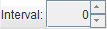
- Set the time interval (in seconds) between every two successive steps in the process invoked by .
ACTL Formula
The editor for ACTL is just a single-line text editing field.
{kind=link}
ACTL is a fragment of CTL where paths can only be quantified by ∀. This fragment is first identified in [GL94] for modular verification.
Syntax
ψ ≡ AP │ ~ ψ │ ψ /\ ψ │ ψ \/ ψ │ ψ --> ψ │ ψ <--> ψ
φ ≡ ψ │ φ /\ φ │ φ \/ φ │ AX φ │ AF φ │ AG φ │ A(φ U φ) │ A(φ R φ)
where AP is a set of atomic propositions.
- Boolean Operators
-
Format 1 Format 2 Negation ~ ! Conjunction /\ & Disjunction \/ | Implication --> -> Equivalence <--> <-> - Temporal Operators
-
Format 1 Format 2 Next AX Eventually (Sometime) AF Henceforth (Always) AG Until A(φ U ψ) Release A(φ R ψ) A(φ V ψ)
GOAL assumes the following binding precedence (higher operators have higher precedence):
Unary Operators = Temporal Operators Conjunction Disjunction Implication Equivalence
Examples
- AX p \/ AX q
- AG AF p
Finite State Automaton
This class includes classic finite word automata (NFW or NFA), Büchi automata (NBW or BA), co-Büchi automata (NCW), generalized Büchi automata (NGBW or GBA), Muller automata (NMW), Rabin automata (NRW), Streett automata (NSW), parity automata (NPW), transition Büchi automata (NTBW or TBA), transition generalized Büchi automata (NTGBW or TGBA), transition Muller automata (NTMW), transition Rabin automata (NTRW), transition Streett automata (NTSW) and transition parity automata (NTPW).
{kind=link}
Toolbar Items
- Select states, move states, change the transition curvature, and double click on a transition to edit its label.
- Click on the editor to create a new automaton state.

- Click on a state s, hold on the left mouse button, and release on another
state t to create a transition from s to t.
When the left mouse button is released, a text field will appear to edit the
label of the transition to be created.
The label must be a valid symbol in the alphabet of the automaton.
If the symbol does not exist in the alphabet, GOAL will try to expand the
alphabet automatically for the user.
There are two types of alphabet.
- Propositional Alphabet - A propositional symbol is represented by a string, consisting of blank-separated strings (literals), that encodes a truth assignment to the atomic propositions appearing in the intended temporal formula. For temporal formulae with two atomic propositions p and q, the alphabet will be {p q, p ~q, ~p q, ~p ~q}, where "p q", "p ~q", "~p q", and "~p ~q" are the four "symbols" encoding all four possible truth assignments. The symbol "p ~q", for instance, encodes the truth assignment that p is true and q is false. A transition labled with a partially specified symbol "p" will be treated as two transitions labeled respectively with "p q" and "p ~q". The order in which the propositional literals appear is immaterial, but they must be separated by a blank space.
- Classical Alphabet - A classical symbol is represented by a character string without blank spaces. For example, the alphabet may be {stop, go, turn}, where "stop", "go", and "turn" are the three symbols.

- Click on a state, a transition label, or some state of the selected states to delete the state, the transition, or all the selected states.
-
Open the acceptance condition editor.
When this toolbar item is enabled and an acceptance set in the accetpance
condition editor is selected, click on a state to insert/remove it to/from
the selected acceptance set.
For Büchi acceptance condition, there is only one acceptance set and
thus it is automatically selected.
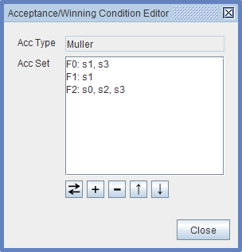The buttons in the acceptance condition editor are listed below.Acceptance condition and winning condition editor
- - Toggle a state in/out the selected acceptance set.
- - Insert a new acceptance set or acceptance pair.
- 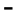 - Remove an acceptance set or acceptance pair.
- - Move an acceptance set or acceptance pair up.
- - Move an acceptance set or acceptance pair down.

-
Click on a state to focus on it and its neighbors.
Other states will become transparent.
The incoming transitions and the outgoing transitions of the focused state
will be drawn in different colors.
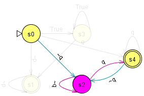Effect of the focus tool - Click on a state or a transition to change its color.
Popup Menu Items
Whenever the right mouse button is clicked inside an automaton editor, a popup menu will appear. Whenever the right mouse button is clicked on a state, a transition, or a set of selected states and transitions, some items in the popup menu will become enabled to adjust properties of states and transitions.- Initial State - Checked if the selected state is an initial state.
- Final State - Checked if the selected state is a final state in a two-way alternating automaton.
- State Attributes - Choose the attributes to be shown below a state.
-
State Name - Specify how to show the name of a state.
There are four options.
- Custom Name - Display the state name specified by the user. If there is no such name, display an initial state prefix followed by the state ID.
- Initial + ID - Display an initial state prefix followed by the state ID.
- ID - Display the state ID.
- None - Display nothing.
- Reorder States - Reorder state IDs by a DFS.
- Alignment - Align the selected states.
- Full Transition Display - Checked if the transition symbols are not simplified. When the transition symbols are simplified, GOAL will, for example, use a transition labeled with "p" to represent two transitions labeled with "p q" and "p ~q" for an automaton with a propositional alphabet {p q, p ~q, ~p q, ~p ~q}.
- Transition Attributes - Choose the attribute to be shown on a transition.
- Reset All Curves - Reset the curature of all transitions.
- Direction - Set the direction of a transition in a two-way alternating automaton.
- Player - Change the owner player of a game state.
- Color - Change the fill color of a state or the line color of a transition.
- Text Color - Change the text color.
- Opacity - Set the opacity of selected states and transitions.
- Layout - Lay out an automaton by various layou algorithms. See here for more details.
-
Properties - Open a dialog to edit the properties of a selected
state, a selected transition, or an automaton.
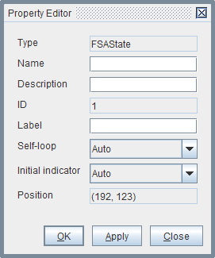 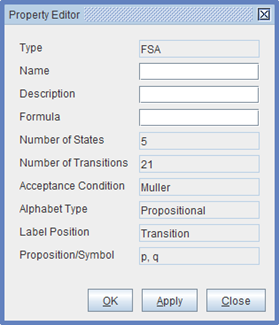Property editor for various objects
{kind=link}
Alternating Automaton
The standard presentation of an alternating automaton contains universal-states and existential-states. In GOAL, a universal-state is represented by a box node, while an existential-state is represented by a circle node. GOAL only supports alternating automata in disjunctive normal form (DNF) and conjunctive normal form (CNF). For an alternating automaton in DNF, an existential-state can have transitions with labels to universal-states and existential-states, while a universal-state can only have transitions without any label to existential-states. For example, below is an ABW equivalent to "[]<> p". When a "~p" is consumed in state s0, the successors will be {s0, s1}.
Similarly, for an alternating automaton in CNF, a universal-state can have transitions with labels to universal-states and existential-states, while an existential-state can only have transitions without any label to universal-states.
Toolbar Items
- See also the toolbar items for finite state automata.
- Click on the editor to create a new existential-state in a DNF alternating automaton.
- Click on the editor to create a new universal-state in a DNF alternating automaton.
- 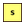
- Click on the editor to create a new universal-state in a CNF alternating automaton.
- Click on the editor to create a new existential-state in a CNF alternating automaton.
- See also the toolbar items for finite state automata.
- See also the toolbar items for finite state automata.
- See also the toolbar items for finite state automata.
- See also the toolbar items for finite state automata.
- See also the toolbar items for finite state automata.
Two-Way Alternating Automaton
In a two-way alternating automaton, after reading a symbol wi in a
word w0 wi … wi-1 wi
wi+1 …, the next symbol to be read can be wi-1 or
wi+1. Thus, a node in the run tree of a two-way alternating
automaton remembers not only the current state in the automaton but also a
position in the word indicating which symbol is to be read. If the position in
a node is i, then the position in its children may be
i+1 or i-1. (The children may have different
positions.)
A two-way alternating automaton in GOAL may have the following three different types of transitions:
- A (forward) transition with a solid line: The position is incremented by 1.
- A (backward) transition with a dashed line: The position is decremented by 1.
- A transition with a dotted line: This transition actually represents two transitions with the same symbol, one with a solid line and the other with a dashed line.
Toolbar Items
The toolbar items of the editor for two-way alternating automata are the same as those of the editor for alternating automata. The type of a transition can be changed in the popup menu of the transition.Game
GOAL only supports two-player games. The states owned by player 0 are represented by circle nodes, while the states owned by player 1 are represented by box nodes.Toolbar Items
- See also the toolbar items for finite state automata.
- Click on the editor to create a new state owned by player 0.
- Click on the editor to create a new state owned by player 1.
- See also the toolbar items for finite state automata.
- See also the toolbar items for finite state automata.
- Open the winning condition editor. See also for finite state automata.
- See also the toolbar items for finite state automata.
- See also the toolbar items for finite state automata.
Menu Items
The menu items listed in the following come from the default installation.Quick links: File, Edit, View, Repository, Formula, Automaton, Game, Window, Help
File
- New - Create a new editable object.
-
Open File... - Open a file.
The supported file formats are listed in the following.
- GFF (GOAL File Format) - The XML file format used by GOAL.
- Antichain Format - The file format used by mh for checking universality of NBW.
- BA Format - A file format used in Ramsey-based containment testing. See here for more details.
- HOAF - the Hanoi Omega-Automata (HOA) format [BBD+15]. See here for more details. Note that not all automata in HOAF can be opened. For example, automata with conjuncted initial states are not supported by GOAL. For an automaton with a classical alphabet, it is saved in HOAF with a propositional alphabet, aliases, and a custom property "classical-alphabet". The custom property allows GOAL to interpret names of aliases as classical symbols when reading the HOAF file back. If an HOAF file represents an automaton with a classical alphabet, every state label or transition label must be a single positive alias name.
- JFLAP File Format (JFF) - The file format used by JFLAP. Currently, only finite state automata in JFF are supported.
- LTL2Buchi Format - The XML file format output by
LTL2Buchi
with the argument
-o xml. - MoDeLLa Format - The XML file format output by MoDeLLa with the argument
-n. - PGSolver Format - The file format used by PGSolver to define parity games.
- Promela Never Claim - The file format used by SPIN
to define Büchi automata. The Promela never claim can be output
by SPIN,
by LTL2Buchi with
the
-o promelaargument, by MoDeLLa with the-sargument, or by other tools.
- Close - Close the active tab.
- Close All - Close all tab.
- Save - Save the active object to a file.
-
Save As... - Save the active object to a specified file in a
specified format that can be decoded back.
The supported file formats are listed in the following.
- GOAL File Format (GFF)
- HOAF - the Hanoi Omega-Automata (HOA) format. This format is available for finite state automata and alternating automata both with propositional alphabets.
- Antichain Format - This output format is available only for Büchi automata with alphabets of size 2.
- BA Format - This output format is available only for Büchi automata with classical alphabets.
- JFLAP File Format (JFF) - This output format is available only for classic finite state automata.
- PGSolver - This output format is available only for parity games. Note that the output will discard all transition labels.
- Promela Never Claim - This output format is available only for Büchi automata.
- Save All - Save all objects.
- Import - Import objects from other formats.
-
Export
- Single - Export an object to a file in a format that may
not be decoded back to the object.
The supported file formats are listed in the following.
- GOAL File Format (GFF)
- Antichain Format - This output format is available only for Büchi automata with alphabets of size 2.
- BA Format - This output format is available only for Büchi automata with classical alphabets.
- DOT Format - A file format used by Graphviz. This output format is available only for Büchi automata.
- GasTeX - GasTeX is a LaTeX package for drawing graphs and automata.
- JFLAP File Format (JFF) - This output format is available only for classic finite state automata.
- JGraph XML - JGraph is a general drawing library. This output format is available only for finite state automata.
- JPEG
- PGSolver - This output format is available only for parity games.
- Portable Network Graphics (PNG)
- Promela Never Claim - This output format is available only for Büchi automata.
- Scalable Vector Graphics (SVG)
- TikZ - TikZ/PGF is a LaTeX package for generating graphics.
- Vaucanson-G - Vaucanson-G is a LaTeX package for drawing automata.
- Multiple - Export multiple objects to a single file. The file is always in GOAL File Format (GFF).
- Single - Export an object to a file in a format that may
not be decoded back to the object.
The supported file formats are listed in the following.
- Print - Print the active object.
-
Recent Files - Open a recent file, open all recent files, or clear
the recent file history.
Use Ctrl-Shift-R or CMD-Shift-R (in Mac OS) and number keys to quickly open recent files.
- Exit - Quit GOAL.
Edit
- Undo - Undo an action.
- Redo - Redo an action.
- Select All - Select all states and transitions in the active automaton.
- Search - Search states in the active automaton.
- Cut - Cut text in a formula editor or copy states in an automaton editor.
- Copy - Copy text in a formula editor or copy states in an automaton editor to the clipboard.
-
Copy As - Copy selected states in an automaton editor to the
clipboard in various plain text formats.
If no state is selected, the whole automaton will be copied.
- Promela
- LaTeX (GasTeX)
- LaTeX (Tikz)
- LaTeX (Vaucanson-G)
- Paste - Paste text to a formula editor or paste states to an automaton editor.
- Delete - Delete selected automaton components or selected text.
- Merge - Merge selected states.
- Reposition - Reposition the object in the active editor.
- Preferences - Set the user preferences.
View
- Property Editor - Toggle the display of the property editor.
- Recent Files - Open a dialog for selecting recent files by number keys 0-9.
- Snap To Grid - Snap the center of a state to a grid.
- Display Gridlines - Display gridlines.
- Display Guidelines - Display some guidelines when dragging a state.
- Floatable Toolbar - Make the toolbars floatable.
-
Zoom - Set the zoom level of an automaton.
Use Ctrl-MouseWheel or Mac trackpad (pinch open & close) to zoom in or out quickly.
Repository
- Local Büchi Repository - Display the local repository containing the system-defined and the user-defined automata.
- Online Büchi Repository - Display the automata on the Büchi Store [TTCC11, TTCC13].
- Büchi Store Uploader - Upload the active automaton to the Büchi Store [TTCC11, TTCC13].
Formula
- Satisfiability - Test if a formula is satisfiable.
- Validity - Test if a formula is valid
- Temporal Hierarchy -
Classify a QPTL formula into the Temporal Hierarchy
[MP90].
- Syntax-Based: Classify a QPTL formula into standard κ-formulae where κ is the classes of the Temporal Hierarchy [CMP92]. A standard κ-formula specifies a κ-property. A property specifiable by temporal logics is a κ-property if and only if it is specifiable by a future standard κ-formula.
- Language-Based: Classify the language of a QPTL formula into the Temporal Hierarchy.
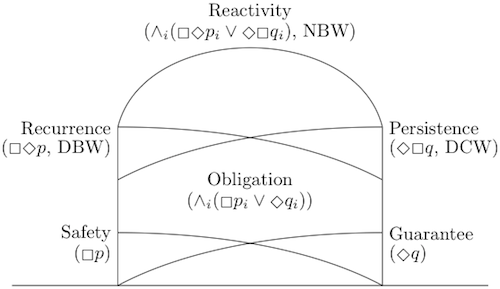The Temporal Hierarchy wherep,q,pi, andqiare past formulae. - Negation Normal Form - Convert a logic formula into negation normal form if it is possible.
- Prenex Normal Form - Convert a logic formula into prenex normal form if it is possible.
- Simplify - Simplify a logic formula or an algebraic expression syntactically.
- Past/Future Separation - Separate the past operators and the future operators in a QPTL formula [Gab87]. The QPTL formula is required to be convertible to prenex normal form.
- Translate RE To NFW - Translate a regular expression to an equivalent NFW.
- Translate ORE To NFW - Translate an ω-regular expression to an equivalent NBW.
-
Translate QPTL - Translate a QPTL formula to an equivalent
automaton.
-
To NGBW (Label-On-State) - Translate a QPTL formula to a
label-on-state NGBW.
- Tableau (MP) - An implementation of the translation algorithm in [MP95].
- Incremental Tableau (KMMP) - An implementation of the translation algorithm in [KMMP93].
- Temporal Tester (KP) - An implementation of the translation algorithm in [KP00].
- Extended On-The-Fly (GPVW) - An extended version of the original on-the-fly translation algorithm GPVW [GPVW95]. The extension allows the translation of quantified formulae and past formulae.
- Extended On-The-Fly (GPVW+) - An extended version of the on-the-fly algorithm GPVW+ [GPVW95]. The extension allows the translation of quantified formulae.
- Extended LTL2AUT (DGV) - An extended version of the LTL2AUT translation algorithm [DGV99]. The extension allows the translation of quantified formulae and past formulae.
- Extended LTL2AUT+ (DGV) - A slightly improved version of the extended LTL2AUT translation algorithm.
- Extended MoDeLLa (ST) - An implementation of the MoDeLLa translation algorithm [ST03] with extensions for past operators.
- Step-By-Step Tableau (MP)
- Step-By-Step Extended On-The-Fly (GPVW)
- Step-By-Step Extended On-The-Fly (GPVW+)
- Step-By-Step Extended LTL2AUT (DGV)
- Step-By-Step Extended LTL2AUT+ (DGV)
- Step-By-Step Extended MoDeLLa (ST)
-
To NBW (Label-On-State) - Translate a QPTL formula to a
label-on-state NBW.
- Tableau (MP)
- Incremental Tableau (KMMP)
- Temporal Tester (KP)
- Extended On-The-Fly (GPVW)
- Extended On-The-Fly (GPVW+)
- Extended LTL2AUT (DGV)
- Extended LTL2AUT+ (DGV)
- Extended MoDeLLa (ST)
-
To NGBW - Translate a QPTL formula to an NGBW.
- Tableau (MP)
- Incremental Tableau (KMMP)
- Temporal Tester (KP)
- Extended On-The-Fly (GPVW)
- Extended On-The-Fly (GPVW+)
- Extended LTL2AUT (DGV)
- Extended LTL2AUT+ (DGV)
- Extended MoDeLLa (ST)
-
To NBW - Translate a QPTL formula to an NBW.
- Tableau (MP)
- Incremental Tableau (KMMP)
- Temporal Tester (KP)
- Extended On-The-Fly (GPVW)
- Extended On-The-Fly (GPVW+)
- Extended LTL2AUT (DGV)
- Extended LTL2AUT+ (DGV)
- KP02 - An implementation of the inductive translation algorithm in [KP02]. The QPTL formula is not required to be in prenex normal form.
- Extended MoDeLLa (ST)
- LTL2BA (GO) - An implementation of the translation algorithm in [GO01]. In this implementation, the simplification of LTL formulae applied in the paper is not fully implemented. The definitions of transition relations are also different in this implementation.
- PLTL2BA (GO) - An implementation of the translation algorithm in [GO03].
- Extended Couvreur's Algorithm - An implementation of the Couvreur's translation algorithm [Cou99] with extensions for past operators.
- Extended LTL2BUCHI (GL) - An implementation of the LTL2BUCHI translation algorithm [GL02] with extensions for past operators.
- CCJ09 - An implementation of the translation algorithm in
[CCJ09]. The supported formula patterns
include:
- <>(p1 ∧ ()(p1 ∧ ()(... ∧ ()p1))) ∧ <>(p2 ∧ ()(p2 ∧ ()(... ∧ ()p2))) ∧ ...
- <>(p1 ∧ <>(p2 ∧ <>(... ∧ <>pn))) ∧ <>(q1 ∧ <>(q2 ∧ <>(... ∧ <>qm))) ∧ ...
- []<>p1 ∧ []<>p2 ∧ ... ∧ []<>pn
- <>[]p1 ∨ <>[]p2 ∨ ... ∨ <>[]pn
- QPTL2BA - A translation developed by the GOAL development team from a QPTL formula in canonical forms to an equivalent Büchi automaton. Past sub-formulae are required to be in prenex normal form. Formulae that have boolean operators, future operators, and quantifications applied outside sub-formulae in canonical forms are also supported. See the Temporal Hierarchy for more details of canonical forms.
Algorithm Supported Formulae Tableau (MP) QPTL in prenex normal form Incremental Tableau (KMMP) QPTL in prenex normal form Temporal Tester (KP) QPTL in prenex normal form Extended On-The-Fly (GPVW) QPTL in prenex normal form Extended On-The-Fly (GPVW+) Future QPTL in prenex normal form Extended LTL2AUT (DGV) QPTL in prenex normal form Extended LTL2AUT+ (DGV) QPTL in prenex normal form KP02 QPTL Extended MoDeLLa (ST) QPTL in prenex normal form LTL2BA (GO) Future QPTL in prenex normal form PLTL2BA (GO) QPTL in prenex normal form Extended Couvreur's Algorithm QPTL in prenex normal form Extended LTL2BUCHI (GL) QPTL in prenex normal form QPTL2BA QPTL formulae constructed from canonical forms A table of formulae supported by the above translation algorithms. -
To NTGBW - Translate a QPTL formula to an NTGBW.
- LTL2BA (GO)
- PLTL2BA (GO)
- Extended Couvreur's Algorithm
- Extended LTL2BUCHI (GL)
-
To ABW - Translate a QPTL formula to an ABW.
- QPTL2BA - A translation developed by the GOAL development team from a QPTL formula without past operators to an equivalent alternating Büchi automaton.
-
To ACW - Translate a QPTL formula to an ACW.
- LTL2VWAA (GO) - The translation from an LTL formula to an equivalent VWAA used by LTL2BA.
-
To TWACW - Translate a QPTL formula to a two-way ACW.
- PLTL2TWVWAA (GO) - The translation from an LTL formula to an equivalent two-way VWAA used by PLTL2BA.
- QPTL2BA - A translation developed by the GOAL development team from a QPTL formula in canonical forms to an equivalent two-way alternating co-Büchi automaton. Past sub-formulae are required to be in prenex normal form. See the Temporal Hierarchy for more details of canonical forms.
-
To NGBW (Label-On-State) - Translate a QPTL formula to a
label-on-state NGBW.
-
Translate ACTL - Translate an ACTL formula
fto a Kripke structureAinterpreted as a label-on-state automaton such that for all Kripke structureB,B |= fiffB ≤ A. For more details about|=and≤, please refer to [GL94].-
To NGBW (label-on-state)
- PMT02 - An implementation of a variant tableau construction based on [PMT02].
-
To NGBW (label-on-state)
{kind=link}
Automaton
-
Alphabet - Operations on the alphabet of the active automaton.
- Display Propositions/Symbols - Display the propositions or the classical symbols in the alphabet of the active automaton.
- Expand Alphabet - Expand the alphabet of the active automaton by a proposition or a classical symbol.
- Contract Alphabet (Projection) - Project out a proposition or a classical symbol from the alphabet of the active automaton.
- Rename Proposition/Symbol - Rename a proposition or a classical symbol to another literal.
- Alphabet Abstraction - abstract the alphabet of an automaton that
has
- a propositional alphabet,
- labels on transitions, and
- an acceptance condition on states.
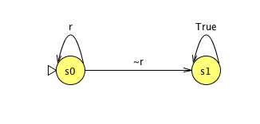An automaton after the alphabet abstraction - Convert Alphabet Type - Convert between a propositional alphabet and a classical alphabet. Before the conversion, a mapping from the symbols in the old alphabet to the symbols in the new alphabet has to be provided by the user. It is possible to map multiple old symbols to a single new symbol. It is also possible to map a classical symbol to a union of propositional symbols provided that the union can be represented by a conjunction of literals. For example, in the conversion from a classical alphabet {0, 1} to a propositional alphabet {p q, p ~q, ~p q, ~p ~q}, {0 → p, 1 → p q} is a valid mapping. Note that if the mapping induces duplicate transitions, they will be merged but their custom properties may be discarded.
- Duplicate - Duplicate the active automaton.
- Merge - Merge an automaton into the active automaton. The acceptance conditions are also merged.
-
Acceptance Condition - Operations on the acceptance condition of
the active automaton.
- Reset Acceptance Condition - Reset the acceptance condition of the active automaton.
- Maximize Acceptance Set - Maximize the Büchi acceptance set of the active NBW without changing its language.
- Minimize Acceptance Set - Simplify the Büchi acceptance set of the active NBW without changing its language.
- Parity Interpretation - Change a parity condition from an interpretation to another interpretation. The parity interpretation can be min-even, min-odd, max-even, or max-odd. Note that GOAL uses min-even.
- Parity Compression - Compress parity conditions.
- Parity Propagation - Propagate parities of states in a parity condition.
-
Utilities
- Find MSCCs - Display the maximal strongly connected components (MSCC) in the active automaton.
- Find Elementary Cycles - Display the elementary cycles in the active automaton. This is an implementation of the algorithm in [Joh75].
- Find State Cycles - Find all cycles. Every cycle is represented as a set of states.
- Find Transition Cycles - Find all cycles. Every cycle is represented as a sequence of transitions.
- Compute Simulation Relations (Naive) - Display the direct and the reverse simulation relations [SB00] baed on a naive computation procedure.
- Compute Simulation Relations (SchematicSimilarity1) - Display the direct and the reverse simulation relations baed on the SchematicSimilarity1 procedure in [HHK95].
- Compute Simulation Relations (RefinedSimilarity) - Display the direct and the reverse simulation relations baed on the RefinedSimilarity procedure in [HHK95].
- Compute Simulation Relations (EfficientSimilarity) - Display the direct and the reverse simulation relations baed on the EfficientSimilarity procedure in [HHK95].
- Compute Delayed Simulation Relation - Display the delayed simulation relation of a Büchi automaton based on the procedure in [EWS01]. Instead of small progress measure applied in the papers, we use the user-default parity game solver to solve delayed simulation games.
- Compute Fair Simulation Relation - Display the fair simulation relation of a Büchi automaton based on the procedure in [EWS01] for label-on-transition Büchi automata or the procedure in [GBS02] for label-on-state Büchi automata. Instead of small progress measure applied in the papers, we use the user-default parity game solver to solve fair simulation games.
- ε-Transition Elimination - Eliminate ε-transitions of a classic finite state automaton with a classical alphabet.
- ω Operation - Create an NBW that accepts
LωwhereLis the language of the active NFW. - Subset Construction - Perform subset construction of an automaton with labels on transitions. The output automaton always has an empty acceptance condition of type same as the type of the acceptance condition of the input automaton.
-
Layout - Lay out the active
automaton by various layout algorithms, including layout creation
algorithms and layout adjustment algorithms.
- Circle Layout - Place states around a circle.
- FR Layout - An implementation of the FR layout algorithm [FR91].
- Force-Scan Algorithm (FSA) - An implementation of the force-scan algorithm [EL92, MELS95, LE98].
- Force-Transfer Algorithm (FTA) - An implementation of the force-transfer algorithm [HL03, HLSG07].
- GEM Layout - An implementation of the GEM layout algorithm [FLM94].
- ISOM Layout - An implementation of the ISOM layout algorithm [Mey98].
- Improved Push Force-Scan Algorithm - An implementation of the improved push force-scan algorithm [HIMF98, HIMF02].
- KK Layout - An implementation of the KK layout algorithm [KK89].
- Random Layout - Place states in random locations.
- SA Layout - An implementation of the SA layout algorithm [DH96].
- Tree Layout - An implementation of a naive tree layout.
Press Shift and do the layout to play layout animation. - Input Test - Test if a word is accepted by the active automaton.
A finite word is a sequence of symbols
w0 w1 … wnwhere each symbol wi may be enclosed in parentheses. An infinite worduvωis denoted byw0 w1 … wi { wi+1 … wn }whereu = w0 w1 … wiandv = wi+1 … wn. For example, assuming that p and q are the atomic propositions,(p q)(p ~q)(~p ~q) { (p q)(~p q) }is a valid infinite word. When spaces and parentheses are omitted in a word, GOAL will decompose the word string into valid symbols automatically (though the decomposition may be ambiguous). Thus,pqp~q~p~q{pq~pq}is exactly the same as(p q)(p ~q)(~p ~q) { (p q)(~p q) }.- Direct Input Test - Test if a word is accepted by the active automaton. The result will be displayed on the screen directly.
- Input Simulator - Display an interactive input simulator to
see if a word is accepted.
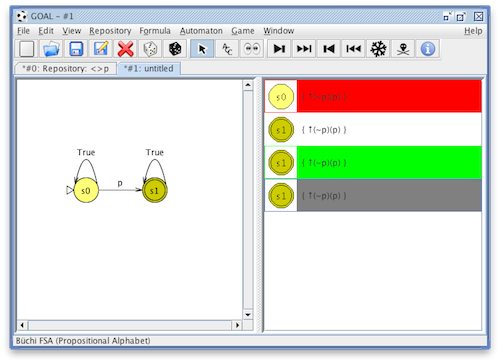The left-hand side in the input simulator is a read-only editor containing an automaton, while the right-hand side is a list containing the runs of the automaton on a word computed so far. A run in the list is displayed as a current state and the word with an "↑" indicating the next symbol to be read (the symbol after "↑"). A run is respectively colored by red or green if it is respectively rejecting or accepting. A run is colored by gray if it is frozen. A frozen run will not read any symbol until it is thawed. There are several toolbar icons for controlling the input simulator as shown below.Input simulator
- Read the next symbol.
- Read the next 10 symbols.
- Go one step backward. Note that deleted and dead runs will not be recovered.
- Reset all.
- 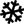
- Freeze or thaw a run.
- Delete a run.
- Show the details of a run.
- Run Tree - Interactively display the run tree of the active automaton on a word.
- Run DAG - Interactively display the run DAG of the active automaton on a word.
- Split Tree - Interactively display the split tree of the active automaton on a word.
- Reduced Split Tree - Interactively display the reduced split tree of the active automaton on a word.
- Emptiness - Test if the language of the active automaton is empty.
-
Containment - Test if the language of the active automaton is
contained in the language of another automaton by checking if the
intersection of the active automaton and the complement of the other
automaton is empty or not. If the intersection is empty, the active
automaton is contained in the other automaton.
- With Naive Approach - Explicitly construct the intersection of the first automaton and the complement of the second automaton. The complement is constructed explicitly by the default complementation construction. If the intersection is empty, then the first automaton is contained in the second automaton.
- On-The-Fly With Safra's Construction - On-the-fly construct the intersection of the first automaton and the complement of the second automaton. The complement is constructed on-the-fly by the Safra's construction [Saf88].
- On-The-Fly With Modified Safra's Construction - On-the-fly construct the intersection of the first automaton and the complement of the second automaton. The complement is constructed on-the-fly by the modified Safra's construction. See here for more information.
- On-The-Fly With Muller-Schupp Construction - On-the-fly construct the intersection of the first automaton and the complement of the second automaton. The complement is constructed on-the-fly by the Muller-Schupp construction [MS95, ATW06].
- On-The-Fly With Safra-Piterman Construction - On-the-fly construct the intersection of the first automaton and the complement of the second automaton. The complement is constructed on-the-fly by the Safra-Piterman construction [Pit06].
- On-The-Fly With Slice-Based Construction - On-the-fly construct the intersection of the first automaton and the complement of the second automaton. The complement is constructed on-the-fly by the slice-based construction [KW08, VW07].
- Equivalence - Test if two automata are equivalent, that is, they have the same language.
- Simulated
- Direct Simulated By - Test if an automaton is direct simulated by another automaton.
- Delayed Simulated By - Test if a Büchi automaton is delayed simulated by another Büchi automaton [EWS01].
- Fairly Simulated By - Test if a Büchi automaton is fairly simulated by another Büchi automaton [EWS01, GBS02].
- Simulation Equivalence - Test if two automata are simulation equivalent, that is, the initial state of an automaton can simulate the initial state of the other automaton, and vice versa.
-
Deterministic
- Syntactically Deterministic - Test if an automaton is syntactically deterministic.
- Semantically Deterministic - Test if an automaton is semantically deterministic, that is, it is equivalent to a DBW. Approaches in [Lan69, BK09] are implemented.
- Semi-deterministic - Test if a Büchi automaton is semi-deterministic.
-
Weakness
- Is Weak - Test if an NBW or an ABW is weak or not.
An NBW is weak if for each maximal strongly connected component
S, States inSare all accepting or all rejecting. - Is Very Weak - Test if an automaton is very weak or not. An automaton is very weak if all cycles are self-loops.
- Is Weak - Test if an NBW or an ABW is weak or not.
An NBW is weak if for each maximal strongly connected component
-
Unambiguous - Test if an NBW is unambiguous or not.
An NBW
Ais unambiguous if for every wordw, either all runs ofwonAare rejecting, or there is exactly one accepting run ofwona. -
Aperiodic (Star-Free) - Test the aperiodicity of an automaton or the
language of an automaton based on [DG08].
Currently, only classic finite automata and Büchi automata are
supported.
Let L be a regular language. Then the followings are equivalent.- L is first-order definable.
- L is star-free.
- L is aperiodic.
- The syntactic monoid of L (the transition monoid of the minimal deterministic automaton that recognizes L) is aperiodic.
Let L be an ω-regular language. Then the followings are equivalent.- L is first-order definable.
- L is star-free.
- L is aperiodic.
- L is definable in LTL.
- There is a counter-free Büchi automaton A with L = L(A).
- There is an aperiodic Büchi automaton A with L = L(A).
- If A is counter-free, then A is aperiodic.
- If A is deterministic and aperiodic, then A is counter-free.
-
Morphism
- Homomorphism - Test if an automaton is homomorphic to another automaton.
- Isomorphism - Test if two automata are isomorphic.
- Temporal Hierarchy - Classify an automaton into the Temporal Hierarchy [MP90].
- Closure - Take the Kleene closure of a classic finite automaton or the safety closure of a Büchi automaton.
- Convert - Convert the active automaton to another automaton type,
logic formula, or algebraic expression.
- Label Position - Convert an automaton with labels on states to an automaton with labels on transitions and vice versa.
- Alternation Style - Convert a DNF alternating automaton to a CNF alternating automaton and vice versa.
- To Regular Expression - Convert a classic finite state automaton with a classical alphabet to an equivalent regular expression.
- To ω-Regular Expression - Convert an ω-automaton with a classical alphabet to an equivalent ω-regular expression.
- To Game - Convert a deterministic ω-automaton to a turn-based game. The automaton is required to have a propositional alphabet, an acceptance condition on states, and labels on transitions. The propositions are treated as Boolean variables and partitioned into two sets, of which one set is controlled by a player and the other set is controlled by its opponent. In the context of synthesis, Player P0 acts as a module and Player P1 acts as the environment of the module.
- To NBW - Convert an automaton to an equivalent Büchi automaton.
- To NCW - Convert an automaton to an equivalent co-Büchi automaton.
- To NGBW - Convert an automaton to an equivalent generalized Büchi automaton.
- To NMW - Convert an automaton to an equivalent Muller automaton.
- To NRW - Convert an automaton to an equivalent Rabin automaton.
- To NSW - Convert an automaton to an equivalent Streett automaton.
- To NPW - Convert an automaton to an equivalent parity automaton.
- To NTBW - Convert an automaton to an equivalent transition Büchi automaton.
- To NTGBW - Convert an automaton to an equivalent transition generalized Büchi automaton.
- To HOA - Convert an automaton to an equivalent HOA automaton.
- To... - Apply a custom conversion where several direct conversions may be chained.
-
Determinize - Determinize the active automaton to an equivalent
deterministic automaton.
- To DFW - Determinize an NFW to an equivalent DFW.
- To DBW (Boker-Kupferman) - Determinize an automaton to an equivalent DBW through DCW by the approach in [BK09] if the determinization is possible.
- To DBW (Landweber) - Determinize an automaton to an equivalent DBW through DMW by the approach in [Lan69] if the determinization is possible.
- To DBW [DEK07] - Determinize an ω-automaton to an equivalent DBW formed by subset construction (if exists) [DEK07].
- To WDBW [DEK07] - Determinize an ω-automaton to an equivalent WDBW formed by subset construction (if exists) [DEK07].
- To DRW (Safra) - Determinize an NBW to an equivalent DRW by Safra's construction [Saf88]. Schewe's history trees [Sch09b] are also implemented as an option.
- To DRW (Modified Safra) - Determinize an NBW to an equivalent DRW by modified Safra's construction. See here for more information.
- To DRW (Muller-Schupp) - Determinize an NBW to an equivalent DRW by Muller-Schupp construction [MS95, ATW06].
- To DPW (Safra-Piterman) - Determinize an NBW to an equivalent DPW by Safra-Piterman construction [Pit06]. Schewe's history trees [Sch09b] are also implemented as an option.
-
Minimization - Minimize a classic finite word automaton.
- By Classical Approach - Minimize a classic finite word automaton by a classical approach.
- By Hopcroft's Algorithm - Minimize a classic finite word automaton by the Hopcroft's algorithm [Hop71].
- Product -
Take the synchronous or asynchronous product of two finite state automata.
The two automata must have the same type of alphabet and have labels
on transitions.
The automaton structure of the product will be the same as that of the
first automaton (the active one).
The acceptance condition of the product only depends on the second
automaton (the selected one in the options dialog).
Let A1=(Σ, Q1, q10, δ1,
F1) and A2=(Σ, Q2, q20,
δ2, F2) be two ω-automata.
The synchronous product of A1 and A2 is P = (Σ, Q,
q0, δ, F) where
- Q = Q1 × Q2,
- q0 = (q10, q20),
- for all a ∈ Σ, s1, t1 ∈ Q1, and s2, t2 ∈ Q2, ((s1, s2), a, (t1, t2)) ∈ δ iff (s1, a, t1) ∈ δ1 and (s2, a, t2) ∈ δ2.
- Q = Q1 × Q2,
- q0 = (q10, q20),
- for all a ∈ Σ, s1, t1 ∈ Q1,
and s2, t2 ∈ Q2, ((s1,
s2), a, (t1, t2)) ∈ δ iff
- (s1, a, t1) ∈ δ1 and s2 = t2, or
- (s2, a, t2) ∈ δ2 and s1 = t1.
- Q = Q1 × Q2,
- q0 = (q10, q20),
- for all a ∈ Σ, s1, t1 ∈ Q1,
and s2, t2 ∈ Q2, ((s1,
s2), a, (t1, t2)) ∈ δ iff
- (s1, a, t1) ∈ δ1 and
- there is (s2, b, t2) ∈ δ2 such that for all literal l ∈ b, M(l) is satisfied by a.
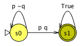 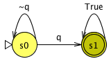The synchronous product, asynchronous product, and synchronous product with a mapping are shown in the following.A1 A2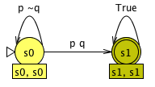 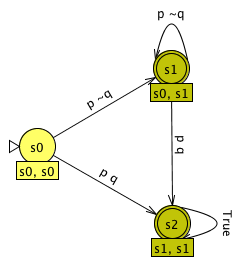
The synchronous product The asynchronous product The synchronous product with a mapping M where M(p) = True and M(q) = p ∨ q
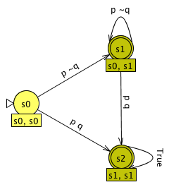
The synchronous product The asynchronous product The synchronous product with a mapping M where M(p) = True and M(q) = p ∨ q - Intersection - Take the intersection of two compatible automata.
- Union - Take the union of two compatible automata.
-
Complement - Complement the active automaton.
- Classic Complementation - Complement a classic finite word automaton.
- Kurshan's Construction - Complement a DBW by Kurshan's construction [Kur87].
- SDBW Construction - Complement an SDBW.
- Ramsey-Based Construction - Complement an NBW by Ramsey-based construction [Buc62, SVW87].
- Safra's Construction - Complement an NBW based on Safra's construction [Saf88]. Schewe's history trees [Sch09b] are also implemented as an option.
- Modified Safra's Construction - This is the same as Safra's construction, except that when constructing Safra trees, the steps of computing successors and creating sons are exchanged.
- Muller-Schupp Construction - Complement an NBW based on Muller-Schupp construction [MS95, ATW06].
- Progress Measure - Complement an NBW with progress measures [Kla91].
- Via Weak Alternating Parity Automaton - Complement an NBW via a weak alternating parity automaton [Tho99].
- Via Weak Alternating Automaton - Complement an NBW via a weak alternating automaton [KV01].
- Safra-Piterman Construction - Complement an NBW based on Safra-Piterman construction [Pit06]. Optimization heuristics in [TFVT10] are implemented. Schewe's history trees [Sch09b] are also implemented as an option.
-
Rank-Based Construction - Complement an NBW by the rank-based
construction [KV01] with optimizations
proposed in [GKSV03,FKV06,
Sch09a,TFVT10].
The following options are available.
- Maximize Acceptance [TFVT10]: Maximize the acceptance set of the input automaton. This option can but not limited to reduce the range of ranks when Rank Reduction is enabled.
- Rank Reduction [GKSV03]: Reduce the range of ranks from [0, 2n] to [0, 2(n - a)] where n is the number of states of the input automaton and a is the number of accepting states of the input automaton. This option is useful when Tight Rank is disabled.
- Rank Decrement [KV01]: Decrement ranks of states at most by this amount. If this amount is 0, there is no restriction. This option is applicable only when Tight Rank is disabled.
- Tight Rank [FKV06]: Only use tight level rankings.
- Unchanged Rank [Sch09a]: Ranks of level rankings never change along a path. This option is applicable only when Tight Rank is enabled.
- Turn-Wise Cut-Point [Sch09a]: Apply turn-wise cut-point construction.
- Reduce Outdegree [Sch09a]: Reduce the number of outgoing transitions. This option is applicable only when Tight Rank is enabled.
- Exclude γ4: Exclude the transition function γ4 in [Sch09a]. This option is only applicable only when Reduce Outdegree is enabled.
- Reduce States: Remove unreachable and dead states after the rank-based construction finishes.
-
Slice-Based Construction - Complement an NBW by the slice-based
construction [KW08,
VW07]. Optimization heuristics in
[TFVT10] are also implemented.
Note: The slice-based construction is contributed by Kähler and Wilke in [KW08]. Its preliminary version is stated in [VW07]. -
Specialized - This menu contains complementation constructions
for automata in special forms.
-
Hierarchy Construction - Complement an NBW in a two-layer hierarchical form.
An NBW is in this form if it contains two disjoint parts Upper and Lower such that:
- the initial states are in Upper,
- there is a connecting state in Lower such that all transitions from Upper to Lower are incoming transitions of the connecting state,
- the connecting state is accepting, and
- no state in Upper is accepting.
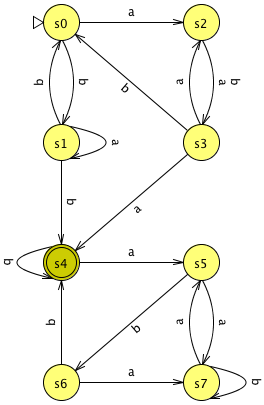An automaton in two-layer hierarchy
-
Hierarchy Construction - Complement an NBW in a two-layer hierarchical form.
An NBW is in this form if it contains two disjoint parts Upper and Lower such that:
- To Complement DBW - Converts a DCW to a complement DBW.
- To Complement DCW - Converts a DBW to a complement DCW.
- To Complement DMW - Converts a DMW to a complement DMW.
- To Complement DRW - Converts a DSW to a complement DRW.
- To Complement DSW - Converts a DRW to a complement DSW.
- To Complement DPW - Converts a DPW to a complement DPW.
- To Complement ABW - Converts an NCW to a complement ABW.
- To Complement ACW - Converts an NBW to a complement ACW.
- To Complement APW - Converts an APW to a complement APW.
-
Complement (Step-by-Step) - Complement the active automaton
step-by-step by various constructions.
The toolbar items used to control the complementation algorithms are the
same as in
Step-by-Step Translation.
- Safra's Construction - NBW → DRW → complement DSW → complement NBW
- Modified Safra's Construction - NBW → DRW → complement DSW → complement NBW
- Muller-Schupp Construction - NBW → DRW → complement DSW → complement NBW
- Via Weak Alternating Parity Automaton - NBW → APW → complement NBW
- Via Weak Alternating Automaton - NBW → complement UCBW → complement VWAA → complement NBW
- Safra-Piterman Construction - NBW → DPW → complement DPW → complement NBW
- Rank-Based Construction
- Slice-Based Construction
- Hierarchy Construction - NBW → complement ABW → complement NBW
- Concatenation - Concatenate an NFW and an ω-automaton such that the concatenation accepts the concatenation of the language of the NFW and the language of the ω-automaton.
- Replacement - Constructs an automaton M for a source automaton M1, a pattern automaton M2 (ε ∉ L(M2)), and a replacement automaton M3 such that L(M) = {w1 c1 w2 c2 … wk ck wk+1 | k > 0, w1 x1 w2 x2 … wk xk wk+1 ∈ L(M1), ∀ i, xi ∈ L(M2), wi does not contain any substring accepted by M2, ci ∈ L(M3)}. The implementation is based on [YBCI08].
- Reverse - Reverse the transitions, initial states, and accepting states of an NFW such that the output accepts the reverse of the language of the input.
-
Simplify - Simplify an automaton without changing its language.
- By Reducing Unreachable/Dead States - Remove unreachable states and dead states.
- By Reducing Alternating Connectors - Remove unnecessary alternating connectors.
- By Pruning Fair Sets - Simplify an NGBW by pruning fair sets [SB00].
- By Simulation - Simplify an ω-automaton by direct simulation and reverse simulation [SB00].
- By Wring Approach - Simplify an NGBW by pruning fair sets and simulation repeatedly until a fix-point is reached.
- By Delayed Simulation - Simplify an NBW by delayed simulation [EWS01]. Instead of small progress measure applied in the paper, we use McNaughton-Zielonka to solve delayed simulation games.
- By Fair Simulation - Simplify an NBW by fair simulation [GBS02]. Instead of small progress measure applied in the paper, we use McNaughton-Zielonka to solve fair simulation games. Similar to small progress measure that can reuse previously computed progress measures, we use the results of McNaughton-Zielonka to reduce fair simulation games during the simplification.
- Through Rabin Index Computation - Simplify the parity condition based on the computation of Rabin index [CM99].
- Promela - Display the Promela code of an NBW.
{kind=link}
{kind=link}
{kind=link}
Game
-
Solve - Solve a game.
-
By... - Solve a game directly.
A solved game with coloring annotations will be returned. If the annotated
game is saved as a GFF file, the winning regions and winning strategies will
also be saved.
In the default installation, there are one solver for reachability games,
one solver for Büchi games, and six solvers for parity games.
- Reachability Game Solvers
- Reachability
- Büchi Game Solvers
- Classical Büchi
- Parity Game Solvers
- Recursive: a recursive algorithm based on induction on the number of parities [Zie98]. This implementation follows the description in [Kus01].
- McNaughton-Zielonka: an algorithm orignates from the work of McNaughton [McN93] and was first presented for parity games by Zielonka [Zie98, Kus01]. The implementation follows the description in [JPZ06].
- Dominion Decomposition: a deterministic subexponential algorithm based on dominion decomposition [JPZ06].
- Small Progress Measure: an implementation of the algorithm based on small progress measure [Jur00]. This implementation does include the optimizations described in [Jur00].
- Big Steps: an algorithm which combines McNaughton's fixed point algorithm with a preprocessing step where a variant of the Jurdziński's small progress measure is applied to find dominions [Sch07]. In this implementation, the winning strategies for a 3-parity subgame are partially computed.
- Global Optimization: an algorithm which applies solver-independent global optimizations to the input parity game before delegating the game solving to another solver. The global optimizations include some heuristics described in [FL09].
The parity conditions in GOAL are min-even. - Step-By-Step By... - Solve a game step-by-step.
-
By... - Solve a game directly.
A solved game with coloring annotations will be returned. If the annotated
game is saved as a GFF file, the winning regions and winning strategies will
also be saved.
In the default installation, there are one solver for reachability games,
one solver for Büchi games, and six solvers for parity games.
- Convert - Convert a game to another equivalent game.
- Product - Take the synchronous product of a game and a finite state automaton. The game and the automaton must have the same type of alphabet and both have labels on transitions. The returned product will be a game with an acceptance condition that only depends on the automaton. A mapping from the propositions of the automaton to predicates on the propositions of the game may be provided. See the automaton product for more details.
Window
- New Window - Open a new GOAL window.
- Next Window - Switch to the next window.
- Previous Window - Switch to the previous window.
- Detach Tab - Detach the active tab from the current window.
- Next Tab - Switch to the next tab.
-
Previous Tab - Switch to the previous tab.
Use Mac trackpad (swipe left or right with three fingers) to quickly switch among tabs.
- Move Tab to Next Window - Move the active tab to the next window.
- Move Tab to Previous Window - Move the active tab to the previous window.
- Move Tab to... - Move the active tab to a specified window.
Help
- Help Contents - Display the help contents.
- Check for Updates - Check for updates of GOAL.
- About - Display information about the GOAL development team.
Command-line Mode
The GOAL command-line mode can be either single mode or batch mode. In the single mode, only one command can be executed each time. In the batch mode, a sequence of commands can be executed. A single command is an instr while a sequence of command is a block in the grammar rules (see the Grammar section).
To execute a single command, the command and its arguments should be preceded by the GOAL launchers. If Java graphical components are required, use the launcher goal on Linux/UNIX or goal.bat on Windows. Otherwise, use gc on Linux/UNIX or gc.bat on Windows to avoid the loading of Java graphical components and suppress the splash image. To execute a sequence of commands, you can write GOAL scripts and use the batch command to execute the statements in the scripts. For example, suppose the file SCRIPT contains a sequence of commands. You can run these commands by invoking GOAL in the following way:
$ ./gc batch SCRIPT
Unlike the execution of a single command, in a GOAL script, variables can be used to capture the results of commands.
Set the shell variable GOAL_DEBUG to true to show exceptions thrown during execution.
Grammar
script := (procedure | stmt)*
procedure := "procedure" id "{" block "}"
block := ( stmt )*
stmt := instr ";" | for_stmt | while_stmt | if_stmt | try_stmt
instr :=
"help" [ --html ] [ keyword ]
| "interactive"
| "exit"
| "break" ( expr )?
| "continue" ( expr )?
| "call" [ id | expr ]
| "include" string
| lval ("=" | "+=" | "-=" | "*=" | "/=" | "%=" | "&=" | "|=") ( expr | cmd_expr )
| "(" lval ( "," lval )* ")" "=" ( expr | cmd_expr )
| cmd_expr
for_stmt := "for" lval "in" expr "do" block "done"
while_stmt := "while" expr "do" block "done"
if_stmt := "if" expr "then" block
( "elif" expr "then" block )*
( "else" block )?
"fi"
try_stmt := "try" "{"
block
"}" "catch" "(" lval ")" "{"
block
"}"
cmd_expr := cmd ( arg )*
shell_expr := "`" string "`"
arg :=
"-" string
| "--" string
| expr
| id
expr :=
expr ( "\/" | "|" ) expr
| expr ( "/\" | "&" ) expr
| expr "==" expr
| expr "!=" expr
| expr "<" expr
| expr ">" expr
| expr "<=" expr
| expr ">=" expr
| expr "+" expr
| expr "-" expr
| expr "*" expr
| expr "/" expr
| expr "%" expr
| "-" expr
| "!" expr
| array
| list
| number
| bool
| string
| lval
| "time"
| cast_type "(" expr ")"
| "(" expr ")"
| "`" shell_cmd "`"
array := "{" [ string ":" ] expr ("," [ string ":" ] expr)* "}"
list := "[" expr (", " expr)* "]"
number := int | float
formula_or_lval := string | lval
file_or_lval := file | string
int_or_lval := int | lval
string_or_lval := string | lval
bool := "true" | "false"
lval := "$" id
int := (["0"-"9"])+
float := (["0"-"9"])+ "." (["0"-"9"])+
file := (["a"-"z","A"-"Z","0"-"9","_","-",".","/"])+
id := ["a"-"z","A"-"Z"] ( ["a"-"z","A"-"Z","0"-"9","_"] )*
shell_cmd := ( ~["`","\n","\r"] )*
cast_type := "bool" | "int" | "float" | "double" | "string"
AUTOMATON_TYPE :=
LOSNFW | LOSNREW | LOSNBW | LOSNCW | LOSNGBW | LOSNMW | LOSNRW | LOSNSW | LOSNPW |
DFW | DREW | DBW | DCW | DGBW | DMW | DRW | DSW | DPW |
NFW | NREW | NBW | NCW | NGBW | NMW | NRW | NSW | NPW |
DTBW | DTCW | DTGBW | DTMW | DTRW | DTSW | DTPW |
NTBW | NTCW | NTGBW | NTMW | NTRW | NTSW | NTPW |
DNFABW | DNFACW | DNFAGBW | DNFAMW | DNFARW | DNFASW | DNFAPW |
CNFABW | CNFACW | CNFAGBW | CNFAMW | CNFARW | CNFASW | CNFAPW |
DNFTWABW | DNFTWACW | DNFTWAGBW | DNFTWAMW | DNFTWARW | DNFTWASW | DNFTWAPW |
CNFTWABW | CNFTWACW | CNFTWAGBW | CNFTWAMW | CNFTWARW | CNFTWASW | CNFTWAPW |
UCW | WAA | WAPA | VWAA | TWVWAA | TWLWAA
GAME_TYPE := DBG | DCG | DFG | DGBG | DMG | DPG | DREG | DRG | DSG |
NBG | NCG | NFG | NGBG | NMG | NPG | NREG | NRG | NSG
ALPHABET_TYPE := PROPOSITIONAL | CLASSICAL
Each command expression cmd_expr starts with a command name followed by the
arguments.
The command names and the arguments for a particular command depend on what
commands are installed.
Variables
In GOAL scripts, every variable name should start with "$". You don't need to declare the type of a variable before using it. For example, below are some acceptable variable names:
$var $v0 $v_0There are some special variables: $0, $1, $2, ..., $#, $*, and $@, which can be used in a GOAL script. $0 is the name of the GOAL script, $1 is the first argument, $2 is the second argument, and so forth. $# is the number of arguments. $* and $@ denote all the arguments.
Lists
One way to create a list is to execute the readline command which reads a file line by line. Each element in the list is a line in the file. For example, the following statement will read the file "input" and put each line as an element in the list variable $list.
$list = readline "input";
Arrays (Maps)
An array is a map from an object convertible to a string to an object. Basically, you can use any object as the index of an array. For example, the following commands are acceptable.
$arr[0] = 0;
$arr["number"] = 10;
$arr = {
1,
"key" : "value" ,
{ "nested" : {2, 3, 4} }
};
Lists
A list is a sequence of items. When iterating over a list, only list items will be returned. This is different from arrays (maps) where indices are returned. Below is an example of lists.
$algorithms = ["-m piterman -r", "-m rank -r", -m slice -r];
for $alg in $algorithms do
$o = complement --option $alg $aut;
done
Multiple Assignments
A multiple assignment tries to split an object and assign the results to a set of variables. Note that the number of left elements should be less than or equal to the number of right elements. A string can be split by spaces, tabs, and newlines. For example, the following statement will split the string into "1" and "2". If you want to use delimiters rather than spaces, tabs, and newlines, you can use the split command.
($x, $y) = "1 2";
The values of elements of a list can be assigned to a set of variables by the following statement.
($elm_1, $elm_2, ..., $elm_n) = $list
The key set of an array can be assigned to a set of variables by the following statement.
($key_1, $key_2, ..., $key_n) = $arr $arr[$key_1] = 0; $arr[$key_2] = 1; ...
Statements
A statement can be an instruction (command) with a trailing ";", a for-statement, while-statement, an if-statement, or a try-statement. A for-statement iterates on the elements of a list or the key set of an array. For examples, below is a for-statements which iterates on a list.
$list = readline "input";
for $elm in $list do
echo $elm;
done
Below is a for-statements which iterates on an array.
for $key in $arr do
echo $arr[$key];
done
Shell Commands
A shell command can be invoked by putting the command between two `. For example, the following command will invoke the shell command "seq 1 10" and the variable $x will capture both the standard output and the error output of this shell command.
$x = `seq 1 10`;
Below is another example that prints numbers from 1 to 10 on the screen.
for $x in `seq 1 10` do
echo $x;
done
A GOAL variable can be used in a shell command directly. The interpreter of GOAL scripts will replace the GOAL variable with its value in the shell command before executing the shell command. For example, the following script will display "Hello World!" on the screen.
$x = "Hello World!"; `echo $x`;
If a variable in a shell command is not a declared GOAL variable, the interpreter will not replace the variable as the variable may be a shell variable. For example, the following script will display a random variable.
`echo $RANDOM`;
If GOAL variables and shell variables have name conflicts, use "\" to force the interpreter to treat a variable as a shell variable. For example, the following script will output the string "random" followed by a random number.
$RANDOM = "random"; `echo $RANDOM\$RANDOM`;
Runtime Arguments
The command-line argument "--option string" is reserved to specify arguments known at runtime.
For example, the evaluation of
cmd --option $x $file;
is the same as the evaluation of
cmd -opt1 -opt3 $file;
if the value of $x is "-opt1 -opt3" at runtime.
Procedures
A procedure is a named list of statements. It can be invoked by the keyword "call" followed by the name of the procedure. A procedure does not need to be defined before its invocation. It is possible to redefine a procedure.
Below is an example.
procedure foo {
echo $name;
}
call foo;
$name = "Hello World!";
call foo;
Below is the output of the above script.
null Hello World!
Note that there is no local variable. Every variable is global.
Scripts
A script contains definitions of procedures and statements. To include another script into the current script, use the "include" command. Suppose there are two files foo.gs and bar.gs. The contents of foo.gs are listed below.
procedure foo {
echo $name;
}
The contents of bar.gs are listed below.
include "foo.gs"; $name = "Hello World!"; call foo;
Below is the output of running bar.gs.
Hello World!
Interactive Mode
GOAL can run in interactive mode with the interactive command. Below is an example.
$ ./gc interactive GOAL > $aut = translate "[]<>p"; GOAL > save $aut "aut.gff";
If you need to interact with the graphical interface, use "goal" (or "goal.bat") instead of "gc" (or "gc.bat").
COMMANDS
Below is the list of available commands.- acc
- alphabet
- aperiodic
- batch
- classification
- clone
- close
- closure
- complement
- concatenation
- containment
- convert
- deterministic
- determinization
- echo
- emptiness
- equivalence
- generate
- homomorphism
- import
- input
- intersection
- isomorphism
- layout
- load
- minimization
- names
- omega
- open
- parity
- preference
- product
- promela
- property
- qptl
- readline
- reduce
- replace
- repository
- reverse
- satisfiability
- save
- separation
- seq
- simequiv
- simplify
- simulated
- sleep
- solve
- split
- stat
- subset
- test
- translate
- unambiguous
- union
- validity
- veryweak
- weak
- Acc -
- NAME
- acc - Maximize or minimize Buchi acceptance condition of a finite state automaton. Note that this operation will be applied directly on the input automaton.
- SYNOPSIS
- acc [-max | -min] FILE_OR_LVAL
- DESCRIPTION
- Maximize or minimize Buchi acceptance condition of a finite state automaton.
-max Maximize the Buchi acceptance condition. -min Minimize the Buchi acceptance condition. - EXAMPLE
-
acc -max $aut;
- Alphabet -
- NAME
- alphabet - Manipulate the alphabet of an automaton or a game.
- SYNOPSIS
- alphabet -s [ -ap ] FILE_OR_LVAL
- alphabet -e EXPR [ -ap ] FILE_OR_LVAL
- alphabet -c EXPR [ -ap ] FILE_OR_LVAL
- alphabet -r EXPR [ -ap ] FILE_OR_LVAL
- alphabet -a EXPR [-R | -A | -S EXPR | -P EXPR | -ap ] FILE_OR_LVAL
- DESCRIPTION
- Manipulate the alphabet of an automaton (or a game). This operation is
directly applied to the input automaton. The returned value is always the new
alphabet of the automaton (or the new atomic propositions if -ap is present).
-s Simply return the alphabet of the input automaton or game. -ap Return the atomic propositions (or classical symbols) instead of the alphabet. -e Expand the alphabet by a list of propositions. -c Contract the alphabet by removing a list of propositions. -r Rename the propositions based on a map from a proposition to its new name. -a Abstract the alphabet based on a map from a predicate to its definition. -R Retain the transition symbols in alphabet abstraction. -A Only annotate the transitions with properties specified by -S and -P. -S Specify the name of the property that will store the symbols on the transitions in alphabet abstraction. -P Specify the name of the property that will store the evaluations of the predicates in alphabet abstraction. - EXAMPLE
alphabet -e "r" aut.gff alphabet -c "p" aut.gff alphabet -r "p=>r,q=>s" aut.gff alphabet -a "r=>p/\q" aut.gff alphabet -a "r=>p/\q" -A -P "Predicates" aut.gff
- Aperiodic -
- NAME
- aperiodic - Test the aperiodicity of an automaton or a language.
- SYNOPSIS
- aperiodic [-A | -a | -s] FILE_OR_LVAL
- DESCRIPTION
- Return "true" if (1) -A is specified and the input automaton is aperiodic or
(2) -A is not specified and the language of the automaton is aperiodic.
Return "false" otherwise.
-A Test the aperiodicity of the automaton rather than the language of the automaton. By default, this command tests the aperiodicity of the language of the input automaton. -a Test the aperiodicity of the automaton first. By default, this option is off. -s Skip rejected strings. By default, this option is off. - EXAMPLE
aperiodic -a -s aut.gff
- Batch -
- NAME
- batch - Execute a script.
- SYNOPSIS
- batch FILE_OR_LVAL
- DESCRIPTION
- Execute the statement in a GOAL script. If the argument is not a file, it will be parsed as a statement.
- EXAMPLE
batch script batch "echo Hello; echo World;"
- Classification -
- NAME
- classification - Classify an automaton or a QPTL formula based on the Manna-Pnueli Temporal Hierarchy.
- SYNOPSIS
- classification [-c | -t | -s] [FILE_OR_LVAL | FORMULA_OR_LVAL]
- DESCRIPTION
- Classify an automaton or a QPTL formula based on the Manna-Pnueli temporal
hierarchy.
-c Use DCW instead of DMW to construct DBW. By default, this options is off. -t Classify in a top-down manner. By default, this option is off. -s Return classes of the Temporal Hierarchy such that a class κ is returned if and only if the QPTL formula is a standard κ-formula. - EXAMPLE
classification "[](p U q) U q"
- Clone -
- NAME
- clone - Make a clone of an object.
- SYNOPSIS
- clone EXPR
- DESCRIPTION
- Make a clone of an object.
- EXAMPLE
clone $aut;
- Close -
- NAME
- close - Close a GOAL window.
- SYNOPSIS
- close [-f] INT_OR_LVAL
- DESCRIPTION
- Close the GOAL window with a specified index.
-f Close the window without saving changes. - EXAMPLE
close 1
- Closure -
- NAME
- closure - Compute the closure of an automaton.
- SYNOPSIS
- closure FILE_OR_LVAL
- DESCRIPTION
- Compute the Kleene closure of a classic finite automaton or the safety closure of a Büchi automaton.
- EXAMPLE
closure abc.gff
- Complement -
- NAME
- complement - Complement an automaton.
- SYNOPSIS
- complement [-m ALGORITHM | -o FILE_OR_LVAL | -s EXPR | ALGORITHM_DEPENDENT_ARGUMENTS] FILE_OR_LVAL
- DESCRIPTION
- Compute the complement of the input automaton by a specified complementation algorithm.
- COMMON ARGUMENTS
- Below is a list of common arguments.
- -m
- Choose the complementation algorithm. Below is a list of available complementation algorithms:
- classic
- deterministic
- hierarchy
- kurshan
- modifiedsafra
- ms
- piterman
- progressmeasure
- ramsey
- rank
- safra
- sdbw
- slice
- waa
- wapa
- Default complementation algorithms for automaton types:
- NFW: classic
- NBW: piterman
- -o
- Output to a designated file. By default, the result will show on the screen.
- -s
- Stop the complementation algorithm at a given stage and output the intermediate result. If the stage is 0, the complementation algorthm will be performed completely. Kurshan's construction does not have middle stage.
- CONSTRUCTION classic
- Complement a classic finite word automaton.
- CONSTRUCTION deterministic
- Complement a deterministic automaton by taking the dual of the acceptance condition.
- CONSTRUCTION hierarchy
- Complement an NBW in a two-layer hierarchical form.
- -kurshan
- (Kurshan) Apply Kurshan's construction if the lower part is deterministic. By default, this option is off.
- -M
- (Underlying Construction) Specify the complementation construction for the lower part. By default, this option is the default complementation construction set in user preferences.
- -post_macc
- (Post-Maximize Acceptance) Maximize the accepting set of the lower part after its complementation. By default, this option is off.
- -post_sim
- (Post-Simulation Simplification) Simplify the lower part by direct and reverse simulation relations after its complementation. By default, this option is off.
- -post_fair
- (Post-Fair Simulation Simplification) Simplify the lower part by fair simulation relation after its complementation. By default, this option is off.
- -pre_macc
- (Pre-Maximize Acceptance) Maximize the accepting set of the lower part before its complementation. By default, this option is off.
- -pre_sim
- (Pre-Simulation Simplification) Simplify the lower part by direct and reverse simulation relations before its complementation. By default, this option is off.
- -pre_fair
- (Pre-Fair Simulation Simplification) Simplify the lower part by fair simulation relation before its complementation. By default, this option is off.
- CONSTRUCTION kurshan
- Complement a DBW by Kurshan's construction [Kur87].
- CONSTRUCTION modifiedsafra
- This construction is the same as Safra's construction, except that when constructing Safra trees, the steps of computing successors and creating sons are exchanged.
- -atl
- Apply the heuristic of simplifying accepting true loops. By default, this option is off.
- -sa
- Apply the heuristic of marking nodes that have only accepting successors green. By default, this option is off.
- CONSTRUCTION ms
- Complement an NBW based on Muller-Schupp construction [MS95, ATW06].
- CONSTRUCTION piterman
- Complement an NBW based on Safra-Piterman construction [Pit06].
- -ht
- Use Schewe's history trees instead of compact Safra trees. By default, this option is off.
- -eq
- Apply local optimization of merging equivalent states during the. conversion from an NBW to an equivalent NBW. By default, this option is off.
- -macc
- Maximize the accepting set of the target automaton. By default, this option is off.
- -sim
- Simplify the complement NPW by simulation relations. By default, this option is off.
- -sp
- Simplify the parity condition based on the computation of Rabin index. By default, this option is off.
- -ro
- Reduce transitions in the conversion from NPW to NBW based on the idea in the slice-based construction. This option is not compatible with parity condition simplification based on the computation of Rabin index. If parity condition simplification is enabled, this option will be disabled. By default, this option is off.
- -r
- Remove unreachable and dead states from the complement. By default, this option is off.
- CONSTRUCTION progressmeasure
- Complement an NBW with progress measures [Kla91].
- -macc
- (Maximize Acceptance) Maximize the accepting set of the input automaton. By default, this option is off.
- -r
- (Reduce States) Remove unreachable and dead states from the resulting automaton. By default, this option is off.
- CONSTRUCTION ramsey
- Complement an NBW by Ramsey-based construction [Buc62, SVW87].
- -macc
- Maximize the accepting set of the target automaton. By default, this option is off.
- -min
- Minimize the intermediate DFW. By default, this option is off
- -r
- Remove unreachable and dead states from the complement. By default, this option is off.
- CONSTRUCTION rank
- Complement an NBW by the rank-based construction [KV01] with optimizations proposed in [GKSV03,FKV06, Sch09a,TFVT10].
- -cp
- (Turn-Wise Cut-Point) Apply turn-wise cut-point construction. By default, this option is off.
- -eg4
- (Exclude γ4) Exclude the transition function γ4 in [Sch09]. This option is applied only when Reduce Outdegree is enabled. By default, this option is off.
- -macc
- (Maximize Acceptance) Maximize the accepting set of the input automaton. By default, this option is off.
- -r
- (Reduce States) Remove unreachable and dead states from the resulting automaton. By default, this option is off.
- -rd
- (Rank Decrement) Specify the maximal decrement of ranks of states from predecessors to successors. This option is applicable only when Tight Rank is disabled. If the value is 0, there is no restriction on the maximal decrement. By default, the value is 1.
- -ro
- (Reduce Outdegree) Apply the option of reducing outdegree. This option is applied only when tight rank is enabled. By default, this option is off.
- -rr
- (Rank Reduction) Apply rank reduction. By default, the option is off.
- -tr
- (Tight Rank) Apply tight rank construction. By default, this option is off.
- -ur
- (Unchanged Rank) Ranks of level rankings of states in the complement remain unchanged and are the same as the rank of the level ranking of their predecessors. This option is applied only when Tight Rank is enabled. By default, this option is off.
- CONSTRUCTION safra
- Complement an NBW based on Safra's construction [Saf88].
- -ht
- Use Schewe's history trees instead of compact Safra trees. By default, this option is off.
- -atl
- Apply the heuristic of simplifying accepting true loops. By default, this option is off.
- -sa
- Apply the heuristic of marking nodes that have only accepting successors green. By default, this option is off.
- CONSTRUCTION sdbw
- Complement an SDBW.
- -a
- Complement runs with a local view. By default, this option is off.
- -d
- Ignore dead states in the input SDBW. By default, this option is off.
- -g
- Apply a staged construction. By default, this option is off.
- -r
- Reduce dead states from the complement. By default, this option is off.
- -x
- Use maximal D instead of minimal D. By default, this option is off.
- CONSTRUCTION slice
- Complement an NBW by the slice-based construction [KW08, VW07]. Optimization heuristics in [TFVT10] are also implemented.
- -p
- Use the preliminary version.
- -r
- Remove unreachable and dead states from the resulting automaton. By default, this option is off.
- -cp
- Apply turn wise cut-point construction. By default, this option is off.
- -ro
- Apply the option of reducing outdegree. By default, this option is off.
- -macc
- Maximize the accepting set of the target automaton. By default, this option is off.
- -tt
- Make the transition relation of the input automaton total. By default, this option is off.
- -bfs
- Use breadth-first search when expanding the complement automaton. By default, depth-first search will be used.
- -madj
- Merge adjacent 0-sets or *-sets. By default, this option is off.
- -eg
- Apply the enhanced guessing. By default, this option is off.
- CONSTRUCTION waa
- Complement an NBW via a weak alternating automaton [KV01].
- CONSTRUCTION wapa
- Complement an NBW via a weak alternating parity automaton [Tho99].
- EXAMPLE
complement -m classic -o b.gff a.gffcomplement -m deterministic a.gff
- Concatenation -
- NAME
- concatenation - Concatenate an NFW and an ω-automaton or objects as a string.
- SYNOPSIS
- concatenation [-o FILE_OR_LVAL] FILE_OR_LVAL FILE_OR_LVAL
- concatenation [-g EXPR] LVAL
- DESCRIPTION
- Concatenate an NFW and an ω-automaton such that the result accepts the
concatenation of the language of the NFW and the language of the omega
automaton. This command can also be used to concatenate the string
representations of objects.
-o Output to a designated file. By default, the result will show on the screen. -g The glue between each string representation of the objects. - EXAMPLE
concatenation -o c.gff a.gff b.gff concatenation -g ", " $objs
- Containment -
- NAME
- containment - Check whether an automaton is contained in another.
- SYNOPSIS
- containment [-m CONTAINMENT_ALG] [-macc | -pre | -sim | -rand ] FILE_OR_LVAL FILE_OR_LVAL
- DESCRIPTION
- Check whether the first input automaton is contained in the second one.
Return "(true, null)" if it is the case, and "(false, CE)" otherwise where
CE is a counterexample.
-m Specify the algorithm used for checking containment. The value can be naive, ms, safra, modifiedsafra, piterman, slice. By default, naive is be used. -macc Maximize the acceptance sets of the input automata. This option applies to ms, safra, modifiedsafra, piterman, and slice. By default, this option is off. -pre Simplify the input automata by simulation relations. This option applies to ms, safra, modifiedsafra, piterman, and slice. By default, this option is off. -sim Utilize the simulation relation between the input automata. This option applies to safra, modifiedsafra, ms, piterman, and slice. By default, this option is off. -rand Apply random search. This option applies to ms, safra, modifiedsafra, piterman, and slice. By default, this option is off. - EXAMPLE
containment a.gff b.gff containment -m piterman a.gff b.gff
- Convert -
- NAME
- convert - Convert an automaton into another type of automaton, a regular expression, an ω-regular expression, or a game, or convert a game into a game of another type.
- SYNOPSIS
- convert [-t AUTOMATON_TYPE | -o FILE_OR_LVAL] FILE_OR_LVAL
- convert [-t GAME_TYPE | -o FILE_OR_LVAL] FILE_OR_LVAL
- convert [-t ALPHABET_TYPE | -o FILE_OR_LVAL] FILE_OR_LVAL
- convert -t game -p FILE_OR_LVAL [-o FILE_OR_LVAL] FILE_OR_LVAL
- DESCRIPTION
- Convert an automaton into another type of automaton, a regular expression,
or an ω-regular expression, or convert a game into another type of game.
-t Specify the target type of the automaton or game to be converted. -o Write the result to the specified file. -p Specify the propositions controlled by Player P0. The expacted value of this argument is a string of comma-separated propositions. - EXAMPLE
convert -t nbw -o output.gff input.gff convert -t re nfw.gff convert -t ore nbw.gff convert -t npg game.gff convert -t game -p "ack1,ack2" dpw.gff
- Deterministic -
- NAME
- deterministic - Test if an automaton is syntactically deterministic, semantically deterministic, or semi-deterministic. By default, syntactic determinism is tested.
- SYNOPSIS
- deterministic [-s | -t EXPR | -m EXPR] FILE_OR_LVAL
- DESCRIPTION
- Return "true" if the input automaton is (syntactically, semantically, or semi depending on the argument -t) deterministic, or "false" otherwise.
- -m ALG
- Specify the algorithm used in semantically deterministic tests. The algorithm can be landweber or bk09.
- -s
- Use strict determinism (exactly one successor for each symbol). This option applies to syntactically deterministic and semi-deterministic tests. By default, this option is off.
- -t TEST
- The argument can be either "syntax", "semantics", or "semi". By default, syntactically deterministic test is applied.
- EXAMPLE
deterministic abc.gff
- Determinization -
- NAME
- determinization - Determinize a nondeterministic automaton to an equivalent deterministic automaton.
- SYNOPSIS
- determinization [-m DETERMINIZATION_ALG | -o FILE_OR_LVAL] FILE_OR_LVAL
- DESCRIPTION
- Compute the determinization of the input automaton. The type of the resulting
automaton depends on the algorithm you choose. When the algorithm is landweber
or bk09, the returned automaton may be null if the input automaton is not
DBW-recognizable.
-m Choose the determinization algorithm. Below is a list of available parameters and their corresponding determinization algorithms: - classic: determinizing a classic automaton to a deterministic classic automaton.
- safra: Safra's Construction for determinizing NBW to DRW.
- modifiedsafra: Modified Safra's Construction for determinizing NBW to DRW.
- ms: Muller-Schupp Construction for determinizing NBW to DRW.
- piterman: Safra-Piterman Construction for determinizing NBW to DPW.
- landweber: Landweber's Construction for determinizing DMW to DBW.
- bk09: The construction through DCW in [BK09].
- dek07wdbw: Determinize an ω-automaton to an equivalent WDBW (if exists) [DEK07].
-o Output to a designated file. By default, the result will show on the screen. -ht Use Schewe's history trees. This option is available for Safra's construction and Safra-Piterman construction. Some optimizations for Safra's construction may not be implemented for history trees. By default, this option is off. -atl Apply the heuristic of simplifying accepting true loops. This options applies to the Safra's construction and the modified Safra's construction. By default, this options is off. - EXAMPLE
determinization -m classic -o b.gff a.gff determinization -m safra -o b.gff a.gff
- Echo -
- NAME
- echo - Output objects on the screen.
- SYNOPSIS
- echo [ -n | -spin | -unicode ] [ EXPR ... ]
- DESCRIPTION
- Output an expression on the screen.
-n Do not output the trailing newline. -spin Output a formula in SPIN format. -unicode Output a formula in unicode. - EXAMPLE
echo "Hello World!"
- Emptiness -
- NAME
- emptiness - Check emptiness of an automaton.
- SYNOPSIS
- emptiness [-ce | -ce_word | -ce_run] FILE_OR_LVAL
- DESCRIPTION
- Return "true" if the input automaton is empty, and "false" otherwise. A counterexample is returned if -ce, -ce_word, or -ce_run is enabled and the input is not empty.
- -ce
- Return the counterexample word and run if the input is not empty.
- -ce_word
- Return the counterexample word if the input is not empty.
- -ce_run
- Return the counterexample run if the input is not empty.
- EXAMPLE
emptiness abc.gff
- Equivalence -
- NAME
- equivalence - Check whether two automata accept the same language.
- SYNOPSIS
- equivalence FILE_OR_LVAL FILE_OR_LVAL
- DESCRIPTION
- Check whether the first input automaton and the second one accept the same language. Return "true" if it is the case, and "false" otherwise.
- EXAMPLE
equivalence a.gff b.gff
- Generate -
- NAME
- Generate - Generate random objects.
- SYNOPSIS
- generate -t EXPR [GENERATOR_DEPENDENT_ARGUMENTS]
- DESCRIPTION
- Generate random objects. What objects will be generated depends on the selected generator. Below is a list of available generators:
- float
- fsa
- game
- hierarchical
- int
- qptl
- sdbw
- COMMON ARGUMENTS
- -t
- Choose the generator.
- GENERATOR float
- SYNOPSIS
- generate -t float [min] max
- DESCRIPTION
- Generate a random floating-point number between min (default to 0, inclusive) and max (exclusive).
- EXAMPLE
generate -t float 0 10
- GENERATOR fsa
- SYNOPSIS
- generate -t fsa [-a type] [-A alphabet] [-m model] [-s i] [-n i] [-pt f] [-ps f] [-pa f] [-dt f] [-da f] [-as i] [-r] [-sim] [-fair] [-ms]
- DESCRIPTION
- Generate a random finite state automaton.
- -a type
- Specify the type of the finite state automaton. The type can be
- nfw, nrew, nbw, ncw, ngbw, nmw, nrw, nsw, npw,
- ntbw, ntgbw, ntmw, ntrw, ntsw, ntpw,
- dfw, drew, dbw, dcw, dgbw, dmw, drw, dsw, dpw,
- dtbw, dtgbw, dtmw, dtrw, dtsw, or dtpw.
- The default automaton type is nbw.
- -A type
- Specify the alphabet type. The type can be propositional or classical. The default type is propositional alphabet.
- -m model
- Specify the generation model of transitions and acceptance condition. The model can be probability or density. The default model is probability.
- -s i
- Specify the number of states to be generated. The default value is 5.
- -n i
- Specify the number of atomic propositions (classical symbols). The default value is 2 (propositions/symbols).
- -pt f
- Specify the probability of whether there should be transitions from one state to another state. The value of the probability should be in the range from 0 to 1. The default value is 0.5.
- -ps f
- Specify the probability of labeling a symbol on a transition. Assume the number of states is n, the number of symbols in the alphabet is m, the probability specified by -pt is p1, and the probability specified by -ps is p2. The expected number of transitions is (n * n * p1) * (m * p2). The default value is 0.5.
- -pa f
- Specify the probability of a state being included in an acceptance set. The default value is 0.5.
- -dt f
- Specify the transition density. The default value is 1.
- -da f
- Specify the acceptance density. The default value is 0.5.
- -as i
- Specify the number of acceptance sets. This option is not used if the acceptance condition of the automaton to be generated is classic finite, reachability, Büchi, or co-Büchi The default value is 3.
- -r
- Remove unreachable and dead states of the generated automaton. By default, this option is disabled.
- -sim
- Apply simplification with direct and reverse simulation relations to the generated automaton. By default, this option is disabled.
- -fair
- Apply simplification with fair simulation relations to the generated automaton. By default, this option is disabled.
- -ms
- Match the desired number of states after simplifying the generated automaton. What simplification will be applied depends on whether -r, -sim, and -fair are enabled or not. If no simplification is specified, then this match always passes. By default, this option is disabled.
- EXAMPLE
generate -t fsa -a nbw -A classical -m density -n 2 -s 5 -dt 1.0 -da 0.3
- GENERATOR game
- SYNOPSIS
- generate -t game [-a type] [-A alphabet] [-m model] [-s i] [-n i] [-pt f] [-ps f] [-pa f] [-dt f] [-da f] [-as i] [-pr f] [-r] [-ms]
- DESCRIPTION
- Generate a random game.
- -a type
- Specify the type of the generated game. The type can be
- nfg, nreg, nbg, ncg, ngbg, nmg, nrg, nsg, npg,
- dfg, dreg, dbg, dcg, dgbg, dmg, drg, dsg, or dpg.
- The default game type is nbg.
- -A type
- Specify the alphabet type. The type can be propositional or classical. The default type is propositional alphabet.
- -m model
- Specify the generation model of transitions and acceptance condition. The model can be probability or density. The default model is probability.
- -s i
- Specify the number of states to be generated. The default value is 5.
- -n i
- Specify the number of atomic propositions (classical symbols). The default value is 2 (propositions/symbols).
- -pt f
- Specify the probability of whether there should be transitions from one state to another state. The value of the probability should be in the range from 0 to 1. The default value is 0.5.
- -ps f
- Specify the probability of labeling a symbol on a transition. Assume the number of states is n, the number of symbols in the alphabet is m, the probability specified by -pt is p1, and the probability specified by -ps is p2. The expected number of transitions is (n * n * p1) * (m * p2). The default value is 0.5.
- -pa f
- Specify the probability of a state being included in a winning condition. The default value is 0.5.
- -dt f
- Specify the transition density. The default value is 1.
- -da f
- Specify the acceptance density. The default value is 0.5.
- -pr f
- Specify the ratio of (player 0 states / player 1 states). The default value is 1.
- -as i
- Specify the number of winning sets. This option is not used if the winning condition of the game to be generated is classic finite, reachability, Büchi, or co-Büchi The default value is 3.
- -r
- Remove unreachable and dead states of the generated game. By default, this option is disabled.
- -ms
- Match the desired number of states after simplifying the generated game if -r is also enabled.
- EXAMPLE
generate -t game -a npg -m density -n 2 -s 10 -pr 1.0 -dt 1.0 -da 0.3 -as 5
- GENERATOR hierarchical
- SYNOPSIS
- generate -t hierarchical [-A alphabet] [-m model] [-n i] [-us i] [-ls i] [-cs i] [-cps f] [-ud] [-upt f] [-ups f] [-udt f] [-ld] [-lpt f] [-lps f] [-ldt f] [-r] [-e]
- DESCRIPTION
- Generate a random NBW in a two-layer hierarchical form.
- -A type
- Specify the alphabet type. The type can be propositional or classical. The default type is propositional alphabet.
- -m model
- Specify the generation model of transitions and acceptance condition. The model can be probability or density. The default model is probability.
- -n i
- Specify the number of atomic propositions (classical symbols). The default value is 2 (propositions/symbols).
- -us i
- Specify the number of states in the upper part to be generated. The default value is 5.
- -ls i
- Specify the number of states in the lower part to be generated. The default value is 5.
- -cs i
- Specify the number of connecting states (connectors) in the upper part. The default value is 1.
- -cps f
- Specify the probability of labeling a symbol on an outgoing transition of a connector. Assume the number of symbols in the alphabet is m and the probability specified by -cps is p1. The expected number of outgoing transitions of a connector is (m * p2). The default value is 0.5.
- -ud
- Make the transitions in the upper part deterministic. The default value is false.
- -upt f
- Specify the probability of whether there should be transitions from one state in the upper part to another state in the upper part. The value of the probability should be in the range from 0 to 1. The default value is 0.5.
- -ups f
- Specify the probability of labeling a symbol on a transition in the upper part. Assume the number of states in the upper part is n, the number of symbols in the alphabet is m, the probability specified by -upt is p1, and the probability specified by -ups is p2. The expected number of transitions in the upper part is (n * n * p1) * (m * p2). The default value is 0.5.
- -ld
- Make the transitions in the lower part deterministic. The default value is false.
- -lpt f
- Specify the probability of whether there should be transitions from one state in the lower part to another state in the lower part. The value of the probability should be in the range from 0 to 1. The default value is 0.5.
- -lps f
- Specify the probability of labeling a symbol on a transition in the lower part. Assume the number of states in the lower part is n, the number of symbols in the alphabet is m, the probability specified by -lpt is p1, and the probability specified by -lps is p2. The expected number of transitions in the lower part is (n * n * p1) * (m * p2). The default value is 0.5.
- -ldt f
- Specify the transition density in the lower part. The default value is 1.
- -udt f
- Specify the transition density in the upper part. The default value is 1.
- -r
- Remove unreachable and dead states of the generated automaton. By default, this option is disabled.
- -e
- Accept empty automata after removing unreachable and dead states. This option is applicable only if -r is specified. This option is off by default.
- EXAMPLE
generate -t hierarchical -A classical -m density -n 2 -us 5 -ls 5 -udt 1.0 -ldt 1.0
- GENERATOR int
- SYNOPSIS
- generate -t int [min] max
- DESCRIPTION
- Generate a random integer between min (default is 0, inclusive) and max (exclusive)
- EXAMPLE
generate -t int 0 10
- GENERATOR qptl
- SYNOPSIS
- generate -t qptl [-n i] [-l i] [-q i] [-p s] [-w wb wf wp] [-r] [-of] [-mcp] [-plain | -spin] [num]
- DESCRIPTION
- Generate num (default to 1) random QPTL formula(e).
- -n i
- Specify the number of atomic propositions. The default value is 2.
- -l i
- Specify the length of the generated formula.
- -q i
- Specify the number of propositions to be quantified.
- -p s
- Specify the policy of the occurrence of propositions in a formula. The value can be one of the followings.
- exact: A proposition appears exactly once.
- atleast: A proposition appears at least once.
- arbitrary: The appearance of propositions is not restricted.
- By default, the policy is atleast.
- -w wb wf wp
- Specify the weights of operators which determine the probability of choosing which operator. The three values wb, wf, and wp are respectively the weight of boolean commands, the weight of future operators, and the weight of past operators. For example, the posibility of choosing a boolean operator is (WEIGHT_BOOLEAN/(WEIGHT_BOOLEAN+WEIGHT_FUTURE+WEIGHT_PAST)). At least one of them must have a positive weight. None of them can have a negative weight.
- -r
- Allow repeated formulae generated. By default, GOAL does not generate the same formula twice.
- -of
- The outmost operator of every generated formula is a future operator.
- -mcp
- Every generated formula must contain at least one past operator if the weight of past operators is greater than 1.
- -plain
- Output formulae in plain text instead of GFF.
- -spin
- Generate formulae that can be accepted by SPIN.
- EXAMPLE
generate -t qptl -n 2 -l 10 -w 1 2 0
- GENERATOR sdbw
- SYNOPSIS
- generate -t sdbw [-A alphabet] [-m model] [-n i] [-ns i] [-ds i] [-cs i] [-cps f] [-nd] [-npt f] [-nps f] [-ndt f] [-dpa f] [-dda f] [-r] [-e]
- DESCRIPTION
- Generate a random SDBW.
- -A type
- Specify the alphabet type. The type can be propositional or classical. The default type is propositional alphabet.
- -m model
- Specify the generation model of transitions and acceptance condition. The model can be probability or density. The default model is probability.
- -n i
- Specify the number of atomic propositions (classical symbols). The default value is 2 (propositions/symbols).
- -ns i
- Specify the number of states in the N part to be generated. The default value is 5.
- -ds i
- Specify the number of states in the D part to be generated. The default value is 5.
- -cs i
- Specify the number of connecting states (connectors) in the N part. The default value is 1.
- -cps f
- Specify the probability of labeling a symbol on an outgoing transition of a connector. Assume the number of symbols in the alphabet is m and the probability specified by -cps is p1. The expected number of outgoing transitions of a connector is (m * p2). The default value is 0.5.
- -nd
- Make the transitions in the N part deterministic. The default value is false.
- -npt f
- Specify the probability of whether there should be transitions from one state in the N part to another state in the N part. The value of the probability should be in the range from 0 to 1. The default value is 0.5.
- -nps f
- Specify the probability of labeling a symbol on a transition in the N part. Assume the number of states in the N part is n, the number of symbols in the alphabet is m, the probability specified by -upt is p1, and the probability specified by -ups is p2. The expected number of transitions in the upper part is (n * n * p1) * (m * p2). The default value is 0.5.
- -ndt f
- Specify the transition density in the N part. The default value is 1.
- -dpa f
- Specify the acceptance probability of the D part. The default value is 0.5.
- -dda f
- Specify the acceptance density in the D part. The default value is 0.5.
- -r
- Remove unreachable and dead states of the generated automaton. By default, this option is disabled.
- -e
- Accept empty automata after removing unreachable and dead states. This option is applicable only if -r is specified. This option is off by default.
- EXAMPLE
generate -t sdbw -A classical -m density -n 2 -ns 5 -ds 5 -ndt 1.0
- Homomorphism -
- NAME
- homomorphism - Check if the first automaton is homomorphic to the second automaton.
- SYNOPSIS
- homomorphism FILE_OR_LVAL FILE_OR_LVAL
- DESCRIPTION
- Check if the first automaton is homomorphic to the second automaton. Return a homomorphism if it is the case, and "false" otherwise.
- EXAMPLE
homomorphism a.gff b.gff
- Import -
- NAME
- import - Import objects from a string.
- SYNOPSIS
- import [-c EXPR] LVAL STRING_OR_LVAL
- DESCRIPTION
- Import objects from a string.
-c A codec used to decode the specified string. - EXAMPLE
import -c BA a.gff "[0]\nb,[0]->[1]\na,[1]->[1]\n[1]"
- Input -
- NAME
- input - Check if a word is accepted by an automaton.
- SYNOPSIS
- input FILE_OR_LVAL STRING_OR_LVAL
- DESCRIPTION
- Check if a word is accepted by an automaton. Return "true" if the word
is accepted, and "false" otherwise.
- EXAMPLE
input a.gff "(p ~q)(p q){ (~p ~q) }" input a.gff "(a)(b){ (a)(b)(a) }"
- Intersection -
- NAME
- intersection - Compute the intersection of the two input automata.
- SYNOPSIS
- intersection [-o FILE_OR_LVAL] FILE_OR_LVAL FILE_OR_LVAL
- DESCRIPTION
- Compute the intersection (synchronous product) of the two input automata
and output the resulting automaton.
-o Output to a designated file. By default, the result will show on the screen. - EXAMPLE
intersection -o c.gff a.gff b.gff
- Isomorphism -
- NAME
- isomorphism - Check if two automaton are isomorphic.
- SYNOPSIS
- isomorphism FILE_OR_LVAL FILE_OR_LVAL
- DESCRIPTION
- Check if two automata are isomorphic. Return an isomorphism if it is the case, and "false" otherwise.
- EXAMPLE
isomorphism a.gff b.gff
- Layout -
- NAME
- layout - Layout an automaton or the active automaton in a GOAL window.
- SYNOPSIS
- layout [-m EXPR] FILE_OR_LVAL
- DESCRIPTION
- Specify a window ID to lay out the active automaton in the window or specify
an automaton to lay out it offscreen.
-m Specify the layout algorithm. Use the command "names layout" to see all available layout algorithms. - EXAMPLE
layout 1 layout -m "Circle Layout" aut.gff
- Load -
- NAME
- load - Load a file into a variable.
- SYNOPSIS
- load [-c EXPR] [ LVAL ] FILE_OR_LVAL
- DESCRIPTION
- Load a file into a variable. If the file contains multiple objects, the
variable will be a list.
-c Specify the codec used to decode the object. By default, the first applicable codec will be used. Use the command "names codec" to see al available codecs. - EXAMPLE
load $omega input.gff $x = load input.gff
- Minimization -
- NAME
- minimization - Compute the minimization of the input classic automaton.
- SYNOPSIS
- minimization [-o FILE_OR_LVAL] FILE_OR_LVAL
- DESCRIPTION
- Compute the minimization of the input classic automaton.
-o Output to a designated file. By default, the result will show on the screen. - EXAMPLE
minimization -o b.gff a.gff
- Names -
- NAME
- names - Print names of some extensions.
- SYNOPSIS
- names EXPR
- DESCRIPTION
- Print names of some extensions and types. The argument can be "alphabet",
"automaton", "codec", "command", "complement", "game", "layout", "player",
"simulation", "simulation2", "solver", or "translate".
- EXAMPLE
names codec
- Omega -
- NAME
- omega - Performing the ω operation on an NFW.
- SYNOPSIS
- omega FILE_OR_LVAL
- DESCRIPTION
- Given an NFW, create an NBW such that a word is accepted by the NBW iff the word can be partitioned into segments and every word segment is accepted by the NFW.
- EXAMPLE
omega abc.gff
- Open -
- NAME
- open - Open a file as an editable object in a GOAL window.
- SYNOPSIS
- open [-w ID] FILE_OR_LVAL
- DESCRIPTION
- Open a file as an editable object in a GOAL window. The return value is the
index of the GOAL window.
-w Specified the GOAL window for the opened editable object. - EXAMPLE
open input.gff
- Parity -
- NAME
- parity - Operations on parity conditions.
- SYNOPSIS
- parity convert EXPR EXPR FILE_OR_LVAL
- parity compress FILE_OR_LVAL
- parity propagate FILE_OR_LVAL
- DESCRIPTION
- Convert the interpretation of parity conditions, compress parity conditions, or propagate parities of states in a parity condition. For the conversion of parity interpretations, the first argument is the source parity interpretation, the second argument is the target parity interpretation, and the third argument is a parity automaton (or a parity game).
- EXAMPLE
parity convert min-even max-even aut.gff parity compress aut.gff
- Preference -
- NAME
- preference - Return user preferences or adjust user preferences at runtime.
- SYNOPSIS
- preference [ EXPR [ EXPR ] ]
- DESCRIPTION
- Return user preferences or adjust user preferences at runtime. The first argument is the name of the preference. The second argument is the new value of the preference. If the second argument is absent, the current value of the user preference with the specified name will be returned. If both arguments are absent, all user preferences and their values will be returned.
- EXAMPLE
preference ComplementAlgorithm preference LayoutAlgorithm org.svvrl.goal.core.layout.KKLayout
- Product -
- NAME
- product - Take the product of the two finite state automata or a game and a finite state automaton.
- SYNOPSIS
- product [-o FILE_OR_LVAL | -m EXPR | -a ] FILE_OR_LVAL FILE_OR_LVAL
- DESCRIPTION
- Take the product of two finite state automata or a game and a finite state
automaton. The inputs must have the same type of alphabet and have labels on
transitions. The structure of the product will be the same as that of the
first automaton (or game). The acceptance condition of the product only
depends on the second automaton.
-o Output to a designated file. By default, the result will show on the screen. -a Take an asynchronous product. If this option is absent, this command will take a synchronous product. -m Specify a map from the propositions of the second automaton to predicates on the propositions of the first automaton (or game). - EXAMPLE
product -o c.gff a.gff b.gff product -m "a: p/\\q, b: q\\/r" a.gff b.gff
- Promela -
- NAME
- promela - Convert a Büchi automaton into Promela code.
- SYNOPSIS
- promela [-o FILE_OR_LVAL] FILE_OR_LVAL
- DESCRIPTION
- Convert a Büchi automaton into Promela code.
-o Output the Promela code to a file. By default, the Promela code will be displayed on the screen. - EXAMPLE
- promela -o output input.gff
- Property -
- NAME
- property - Get or set properties of an editable object such as automata.
- SYNOPSIS
- property FILE_OR_LVAL [ EXPR [ EXPR ] ]
- DESCRIPTION
- Get or set properties of an editable object. The first argument is the object. The second argument is the name of the property. The third argument is the new value of the property. If the third argument is absent, the current value of the property with the specified name will be returned. If both optional arguments are absent, all properties and their values will be returned.
- EXAMPLE
property $aut Formula property $aut Description
- Qptl -
- NAME
- qptl - Manipulate QPTL formulae.
- SYNOPSIS
- qptl [-f | -l | -p | -r EXPR EXPR] FORMULA
- DESCRIPTION
- Manipulate QPTL formulae.
-f Get the free variables in a QPTL formula. -l Get the length of a QPTL formula. -p Check if a QPTL formula contains any past operator. -r Rename a free variable in a QPTL formula. The first argument is an existing proposition and the second argument is a replacement of the existing proposition. - EXAMPLE
qptl -l "[] p"
- Readline -
- NAME
- readline - Read the input file line by line and put the results in a list.
- SYNOPSIS
- readline FILE_OR_LVAL
- DESCRIPTION
- Read the input file line by line and put the results in a list.
- EXAMPLE
readline input.gff
- Reduce -
- NAME
- reduce - Remove unreachable and dead states from an automaton.
- SYNOPSIS
- reduce [-o FILE_OR_LVAL | -u | -d ] FILE_OR_LVAL
- DESCRIPTION
- Given an automaton, remove the unreachable and dead states (if -u and -d are
both present or both absent).
-o Output to a designated file. By default, the result will show on the screen. -u Reduce only unreachable states. -d Reduce only dead states. - EXAMPLE
reduce -o b.gff a.gff
- Replace -
- NAME
- replace - Replace matched substrings.
- SYNOPSIS
- replace EXPR EXPR EXPR
- DESCRIPTION
- Replace matched substrings. An automaton that recognizes the replacement results will be returned. The first argument is the source automaton (or regular expression), the second argument is the pattern automaton (or regular expression), and the third argument is the replacement automaton (or regular expression). If a string in the language of the source automaton contains substrings recognized by the pattern automaton, the matched substrings will be replaced by the strings recognized by the replacement automaton.
- EXAMPLE
replace m1.gff m2.gff m3.gff replace m1.gff "a+" "c"
- Repository -
- NAME
- repository - Access the local and remote repositories.
- SYNOPSIS
- repository [-t EXPR | -min | -f EXPR] ("local" | "remote")
- DESCRIPTION
- Access the automata or the formulae in the local repository or in the remote
repository.
-t Specify the return type, either "automaton" or "formula". By default, pairs of a formula and an automaton will be returned. -min Only return the smallest automata. -f Search for a formula. - EXAMPLE
repository -t automaton local repository -t formula remote
- Reverse -
- NAME
- reverse - Reverse a classic finite state automaton.
- SYNOPSIS
- reverse [-o FILE_OR_LVAL] FILE_OR_LVAL
- DESCRIPTION
- Reverse a classic finite state automaton such that the output accepts the
reverse of the language of the input.
-o Output to a designated file. By default, the result will show on the screen. - EXAMPLE
reverse -o b.gff a.gff
- Satisfiability -
- NAME
- satisfiability - Check whether a formula is satisfiable.
- SYNOPSIS
- satisfiability FORMULA_OR_LVAL
- DESCRIPTION
- Check whether the input formula is satisfiable. Return "true" if it is the case, and "false" otherwise.
- EXAMPLE
satisfiability "(p U q) U ~q"
- Save -
- NAME
- save - Save an object to a file.
- SYNOPSIS
- save [-c EXPR] LVAL FILE_OR_LVAL
- DESCRIPTION
- Save an object to a file.
-c Specify the codec used to encode the object. By default, the GFF codec will be used. - EXAMPLE
save $omega output.gff
- Separation -
- NAME
- separation - Separate the past operators and the future operators in a QPTL formula.
- SYNOPSIS
- separation FORMULA
- DESCRIPTION
- Separate the past operators and the future operators in a QPTL formula. The
formula is required to be convertible to prenex normal form.
-e Perform an equivalent rewrite such that the result is equivalent to the input formula. By default, a congruent rewrite is performed. -plain Output formulae in plain text instead of GFF. -spin Output formulae that can be accepted by SPIN. - EXAMPLE
separation "[] (p --> <-> q)"
- Seq -
- NAME
- seq - Generate a sequence of numbers.
- SYNOPSIS
- seq LAST
- seq FIRST LAST
- seq FIRST INCREMENT LAST
- DESCRIPTION
- Generate a sequence of numbers. The LAST, FIRST, and INCREMENT
in SYNOPSIS are all expressions.
- EXAMPLE
$numbers = seq 1 10
- Simulation Equivalence -
- NAME
- simequiv - Check whether two automata are simulation equivalent.
- SYNOPSIS
- simequiv EXPR EXPR
- DESCRIPTION
- Check whether the two automata are simulation equivalent. Return "true" if it is the case, and "false" otherwise.
- EXAMPLE
simequiv a.gff b.gff
- Simplify -
- NAME
- simplify - Simplify an automaton or a formula.
- SYNOPSIS
- simplify [ -m EXPR | -o FILE_OR_LVAL | OPTIONS ] FILE_OR_LVAL
- Options for simulation: -dse | -ds | -rse | -rs | -ru | -rd
- Options for pruningfairset: -ifs | -rfs | -lfs | -t4 | -t5 | -t6 | -t7 | -t8 | -t9
- DESCRIPTION
- Simplify the input automaton and return the resulting equivalent automaton
of the same type, or simplify the input logic formula.
-m Specify the algorithm used for simplification. The value can be simulation, delayed, fair, pruningfairset, wring, or rabinindex. By default, simulation will be used. -o Output to a designated file. By default, the result will show on the screen. -dse Enable simplification by direct simulation equivalence. -ds Enable simplification by direct simulation. -rse Enable simplification by reverse simulation equivalence. -rs Enable simplification by reverse simulation. -ru Enable reducing unreachable states. -rd Enable reducing dead states. -ifs Enable pruning states not in the final set. -rfs Enable pruning states not reaching the final set. -lfs Enable pruning fair sets that contains another fair set of the final set. -t4 Enable pruning fair sets by Theoram 4. -t5 Enable pruning fair sets by Theoram 5. -t6 Enable pruning fair sets by Theoram 6. -t7 Enable pruning fair sets by Theoram 7. -t8 Enable pruning fair sets by Theoram 8. -t9 Enable pruning fair sets by Theoram 9. - EXAMPLE
simplify -o b.gff a.gff simplify "[] [] p"
- Simulated -
- NAME
- simulated - Check whether the first automaton can be simulated by the second automaton.
- SYNOPSIS
- simulated [-m EXPR] EXPR EXPR
- simulated -d EXPR EXPR
- simulated -f EXPR EXPR
- DESCRIPTION
- Check whether the first automata can be simulated by the second automaton.
Return "true" if it is the case, and "false" otherwise.
-m Specify the name of the simulation computation procedure. If this argument is absent, the default simulation procedure will be used. Use the command "names simulation2" to see all available procedures. -d Use delayed simulation relation. If this argument is present, then both the automata should be Büchi automata. -f Use fair simulation relation. If this argument is present, then both the automata should be Büchi automata. - EXAMPLE
simulated a.gff b.gff
- Sleep -
- NAME
- sleep - Delay for a specified amount of time in seconds.
- SYNOPSIS
- sleep EXPR
- DESCRIPTION
- Delay for a specified amount of time in seconds.
- EXAMPLE
reduce -o b.gff a.gff
- Solve -
- NAME
- solve - Solve a game and return a solution. The input game will be annotated with winning regions and winning strategies.
- SYNOPSIS
- solve [ -m SOLVER ] [-g | -r | -s | -p PLAYER] [ SOLVER_SPECIFIC_ARGIMENTS ] FILE_OR_LVAL
- DESCRIPTION
- Solve a game and return a map m where m["Game"] is a colored, annotated game
and m[PLAYER_NAME] is the winning region and the winning strategy for the
game player of the name PLAYER_NAME. The winning region and the winning
strategy of a game player is also represented by a map w where
w["WinningRegion"] is the winning region and w["WinningStrategy"] is the
winning strategy. The name of the game player can be: P0, P1. If -g, -r, or
-s is provided, only parts of the results will be returned.
-m Specify the name of the game solver. Available game solvers: - bigstep: an algorithm due to Schewe for parity games
- cb: a classical algorithm for Buchi games
- dominiondec: a deterministic subexponential algorithm based on dominion decomposition for parity games
- globalopt: a generic solver with solver-independent global optimizations for parity games
- mz: a recursive algorithm due to McNaughton-Zielonka for parity games
- reachability: an algorithm for reachability games
- recursive: a recursive algorithm due to Zielonka for parity games
- smallprog: an algorithm based on small progress measure for parity games
-g Return only the solved game. -r Return only the winning regions. -s Return only the winning strategies. -p Return the winning region or the winning strategy only for the specified player. This option should be used with -r or -s. - SOLVER globalopt
-
-solver Specify the delegated game solver. -pp Propagate parities of states. The default is off. -pc Compress parity conditions. The default is off. -ps Preprocess states with self-loops. The default is off. -sd Decompose the game into strongly-connected components. The default is off. - SOLVER reachability
-
-max Maximize the strategies for both players. Disabled by default. - EXAMPLE
solve game.gff solve -m mz game.gff
- Split -
- NAME
- split - Split an object into a set of elements.
- SYNOPSIS
- split [-d STRING_OR_LVAL] [EXPR | CMD_EXPR]
- DESCRIPTION
- If the object is a list, this command will return a set of list
elements. If the object is an array, this command will return the
key set of the array. Otherwise, this command will convert the object
into a string and split the string according the delimiter. The default
delimiter is spaces, tabs, and newlines.
-d Specify the delimiter. - EXAMPLE
$keys = split $arr $elements = split -d ":" "1:2:3"
- Stat -
- NAME
- stat - Get statistical data of an automaton or a QPTL formula.
- SYNOPSIS
- stat [-s | -t | -a ] FILE_OR_LVAL
- DESCRIPTION
- Get statistical data of an automaton or a QPTL formula. For automata, the
statistical data include the number of states, the number of transitions, and
the number of acceptance sets. For QPTL formulae, the statistical data include
the number of alternations of past and future temporal operators.
-s Get the number of states only. -t Get the number of transitions only. -a Get the number of acceptance sets (or states) only. - EXAMPLE
stat -s a.gff stat -t a.gff stat a.gff stat "[](p --> <-> q)"
- Subset -
- NAME
- subset - Perform subset construction of an automaton with labels on transitions.
- SYNOPSIS
- subset FILE_OR_LVAL
- DESCRIPTION
- Perform subset construction of an automaton with labels on transitions. The acceptance condition of the output automaton is always empty and has the same type as the type of the acceptance condition of the input automaton.
- EXAMPLE
subset abc.gff
- Test -
- NAME
- test - Perform internal tests.
- SYNOPSIS
- test ???
- DESCRIPTION
- This command is for internal usage.
- Translate -
- NAME
- translate - Translate a logic formula into an automaton.
- SYNOPSIS
- translate [ RE | ORE | QPTL | ACTL ] [ -m TRANSLATE_ALG | -o FILE_OR_LVAL | -t AUTOMATON_TYPE | -sl | -sa | -se | -sf | -sg | -sb | -stgb | -sp | -si | -sr | -rbm | -dt | -mp | -art | -pi | -pe ] FORMULA_OR_LVAL
- DESCRIPTION
- Translate a logic formula into an automaton. By default, this command
translates a QPTL formula into a non-deterministic Büchi word automaton.
RE stands for regular expressions while ORE stands for ω-regular
expressions. The translation for an ACTL formula produces a fair Kripke
structure interpreted as a label-on-state automaton base on [PMT02].
-m Choose the translation algorithm (tableau, inctableau, temporaltester, gpvw, gpvw+, ltl2aut, ltl2aut+, ltl2ba, pltl2ba, couvreur, ltl2buchi, modella, kp02, ccj09, or qptl2ba). This option applies to QPTL translation only. By default, the tableau algorithm will be used. -o Output to a designated file. By default, the result will show on the screen. -t Choose the type of the target automaton (ngbw or nbw). This option applies to QPTL translation only. By default, it will be a non-deterministic Büchi word automaton (NBW). -sl Parse a single letter as a symbol for (ω-)regular expressions. -se Simplify the input (ω-)regular expression. By default, this option is off. -sa Simplify the intermediate automata during the translation of ω-regular expressions. By default, this option is off. -sf Simplify the input QPTL formula before translation. By default, this option is off. -sg Simplify the intermediate NGBW during the translation. By default, this option is off -sb Simplify the NBW during the translation. By default, this option is off. -stgb Simplify the NTGBW by simulation. By default, this option is off. -sp Simplify the NBW after projecting quantifiers. By default, this option is off. -si Simplify intermediate NBW during translation. By default, this option is off. -sr Apply superset reduction to the generalized Büchi acceptance condition. By default, this option is off. -rbm Reduce dead states before merging equivalent NBW states if the algorithm is LTL2BA. By default, this option is off. -dt Delegate the translation of unquantified formulae to another translation algorithm. By default, this option is off. -mp Minimize the automata of past formulae for QPTL2BA. By default, this option is off. -art Apply advanced reduction of NTGBW transitions during the conversion from two-way VWAA for PLTL2BA. By default, this option is off. -pi Apply prime implicants to simplify covers for LTL2AUT+. By default, this option is off. -pe Apply postponed expansion of refined states for GPVW, LTL2AUT, LTL2AUT+, MoDeLLa, LTL2Buchi, and Couvreur. By default, this option is off. -ru Reduce unreachable states of label-on-state NGBW obtained by Tableau. By default, this option is off. -rd Reduce dead states of label-on-state NGBW obtained by Tableau. By default, this option is off. - EXAMPLE
translate -m gpvw -t nbw -o Fp.gff "<>p" translate ORE "(a|b)* { b }"
- Unambiguous -
- NAME
- unambiguous - Test if an NBW is unambiguous.
- SYNOPSIS
- unambiguous FILE_OR_LVAL
- DESCRIPTION
- Test if an NBW is unambiguous.
- EXAMPLE
unambiguous aut.gff
- Union -
- NAME
- union - Compute the union of the two input automata.
- SYNOPSIS
- union [-o FILE_OR_LVAL] FILE_OR_LVAL FILE_OR_LVAL
- DESCRIPTION
- Compute the union of the two input automata and output the resulting automaton.
- -o
- Output to a designated file. By default, the result will show on the screen.
- EXAMPLE
union -o c.gff a.gff b.gff
- Validity -
- NAME
- validity - Check whether a formula is valid.
- SYNOPSIS
- validity FORMULA_OR_LVAL
- DESCRIPTION
- Check whether the input formula is valid. Return "true" if it is the case, and "false" otherwise.
- EXAMPLE
validity "[](p U q) U q <--> p U q"
- Veryweak -
- NAME
- veryweak - Check if an automaton is very weak.
- SYNOPSIS
- veryweak FILE_OR_LVAL
- DESCRIPTION
- Check if an automaton is veryweak.
- EXAMPLE
veryweak a.gff
- Weak -
- NAME
- weak - Check if an NBW or an ABW is weak.
- SYNOPSIS
- weak FILE_OR_LVAL
- DESCRIPTION
- Check if an NBW or an ABW is weak.
- EXAMPLE
weak a.gff
Extending GOAL
GOAL uses Java Plugin Framework (JPF) to export extension points and thus several GOAL functions can be extended. This document does not provide a tutorial on writing plugins and extensions. For the readers that are interested in extending GOAL, they are encouraged to visit the JPF website.
GOAL Libraries
When the user wants to extend GOAL, the development environment should include GOAL classes as libraries. To do this, the user may use the script mklib or mklib.bat to build GOAL libraries. The created GOAL libraries will be placed in the lib directory.Codecs
The codecs can be extended by implementing the interface
Codec.
A codec is an encoder, a decoder, or both.
An encoder is capable of encoding a QPTL formula, a finite state automaton,
an alternating automaton, a game, or other kinds of objects to a file.
A decoder is capable of decoding a file back to an object supported by GOAL.
Extension Point Declaration
<extension-point id="Codec"> <parameter-def id="class" /> <parameter-def id="priority" type="number" /> </extension-point>
- class
- The class implementing
Codec. - priority
- When there are more than one codecs supporting an object, the codec with a highest priority (lower number) will be used if not specified.
Command-Line Commands
The command-line commands can be extended by extending
CommandExpression
or implementing the interface
CommandExtension.
Basically, an object of CommandExpression
represents an invocation of the provided command (together with the arguments for the command),
that is, roughly the cmd_expr in Grammar.
More precisely, a cmd_expr corresponds to an object of
CommandExecutor,
which is used as a wrapper of a command.
When an object of CommandExecutor is evaluated,
it evaluates the runtime arguments specified by --option, instantiates the underlying command with all the arguments, and
then evaluates the underlying command.
An object of CommandExtension provides
meta-information (command name, full name, and help message) about the provided command.
Since static meta-information can be written in plugin.xml,
CommandExtension is used mainly when
the meta-information contains dynamic contents that are known at runtime.
The class extending CommandExpression
must have a constructor taking a list of Expression
as the only argument, and implement the function eval.
An implement of CommandExtension
must have a constructor taking no parameter and should provide the class of the provided command,
the unique command name, the full name, and the help message either in the class itself or in plugin.xml.
Note that the help messages should be written in a wiki format. See the Wiki Format section for more details.
Extension Point Declaration
<extension-point id="CommandExpression"> <parameter-def id="class" /> <parameter-def id="name" /> <parameter-def id="full name" multiplicity="none-or-one" /> <parameter-def id="help" /> </extension-point>
- class
- The class extending
CommandExpression. - name
- The unique command name.
- full name
- The full name to be displayed as the title of the provided command in help messages.
- help
- The help message of the provided command.
<extension-point id="CommandExtension"> <parameter-def id="class" /> <parameter-def id="name" multiplicity="none-or-one" /> <parameter-def id="full name" multiplicity="none-or-one" /> <parameter-def id="help" multiplicity="none-or-one" /> </extension-point>
- class
- The class implementing
CommandExtension. - name
- The unique command name.
- full name
- The full name to be displayed as the title of the provided command in help messages.
- help
- The help message of the provided command.
Constructions Supported by Complement Command
See here for more details.
Solvers Supported by Solve Command
See here for more details.
Complement Construction
The complementation constructions for containment and equivalence testing can be
extended by extending
ComplementConstruction.
The implementation must have a constructor taking a single parameter that extends
Automaton.
The complementation constructions extended can be found in
ComplementRepository.
The complementation constructions available for the
complement command can be extended by adding a
ComplementConstructionExtension
object to CommandRepository
via CommandRepository.addComplementConstructionExtension(ComplementConstructionExtension).
If the extension object provides the default construction for a type of automata, it should be added by
CommandRepository.addComplementConstructionExtension(ComplementConstructionExtension, AutomatonType).
The extension object must provide a unique name for the provided construction, a help message, and the class of
the provided construction either directly in the object or in plugin.xml.
Note that some common arguments (see ComplementCommand)
will be consumed before being passed to the extension object.
Extension Point Declaration
<extension-point id="ComplementConstruction"> <parameter-def id="class" /> <parameter-def id="name" /> </extension-point>
- class
- The class implementing
ComplementConstruction. - name
- The name of this complementation construction.
The extension point of complementation constructions for the complement command is described below.
<extension-point id="ComplementConstructionExtension"> <parameter-def id="class" /> <parameter-def id="default for" multiplicity="none-or-one" /> <parameter-def id="name" multiplicity="none-or-one" /> <parameter-def id="construction" multiplicity="none-or-one" /> <parameter-def id="help" multiplicity="none-or-one" /> </extension-point>
- class
- The class implementing
ComplementConstructionExtension. - default for
- Set the provided construction the default for the specified type of automata.
- name
- The name of the provided complementation construction.
- construction
- The class path of the provided complementation construction.
- help
- The help message.
Console Handlers
Cost Functions
Drawers
Editable
Editors
Formula Rewriter
Game Solvers
The game solvers can be extended by implementing the interface
GameSolver.
The implementation must have a constructor taking no parameter.
Once a game solver is plugged, it can be accessed by methods in
GameSolverRepository
or by the Solve menu item in the graphical user
interface.
To make the solve command-line command support a game
solver, a class implementing
GameSolverExtension
is required.
A GameSolverExtension provides an interface between the
command-line arguments and a game solver, and it can configure the game
solver based on specified command-line arguments.
Extension Point Declaration
For the core package and the gui package,
<extension-point id="GameSolver"> <parameter-def id="class" /> <parameter-def id="acc" /> </extension-point>
- class
- The class implementing
GameSolver. - acc
- The class of the acceptance condition supported by the game solve.
For the command-line package,
<extension-point id="GameSolverExtension"> <parameter-def id="class" /> <parameter-def id="name" /> <parameter-def id="solver" /> <parameter-def id="description" /> <parameter-def id="help" /> </extension-point>
- class
- The class implementing
GameSolverExtension. - name
- A unique name of the game solver. This name will be used in the solve command-line command
- solver
- The class implementing
GameSolver. - description
- A simple description about the provided solver. The description will be displayed in the help message of the solve command.
- help
- The help message of the provided solver.
Generators
Generators are used to generate objects.
A generator can be accessed via the
tool icon or the generate command.
A generator must implements the interface Generator.
The following extension point is used to make a generator available in the graphical interface.
<extension-point id="RandomGenerator"> <parameter-def id="name" /> <parameter-def id="class" /> <parameter-def id="options" /> </extension-point>
- name
- The name of the provided generator. This name must be unique.
- class
- The class of the provided generator, which must implement Generator
with T extending Editable. - options
- The class of the options panel (extending
OptionsPanel) for the generator
To make a generator available in the command-line interface, a class implementing the interface
GeneratorExtension
or extending the abstract class AbstractGeneratorExtension
is required.
If the class extends AbstractGeneratorExtension, only the method
getOptions(Context ctx, List is required to be
implemented.
Other properties such as the name, the description, the help message,
and the class of the provided generator can be provided in plugin.xml.
(See the following extension point.)
In addition to the class implementing GeneratorExtension,
an extension to the following extension point in plugin.xml is also required.
<extension-point id="GeneratorExtension"> <parameter-def id="class" /> <parameter-def id="generator" multiplicity="none-or-one" /> <parameter-def id="name" multiplicity="none-or-one" /> <parameter-def id="description" multiplicity="none-or-one" /> <parameter-def id="help" multiplicity="none-or-one" /> </extension-point>
- class
- A class implementing
GeneratorExtension. - generator
- The class of the provided generator.
- name
- The unique name of the generator.
- description
- The short description of the generator. Should be in one line.
- help
- The help message of the generator.
Layout Algorithms
The layout algorithms can be extended by implementing the interface
Layout.
The implementation must have a constructor taking no parameter.
Extension Point Declaration
<extension-point id="Layout"> <parameter-def id="class" /> <parameter-def id="name" /> <parameter-def id="mnemonic" multiplicity="none-or-one" /> <parameter-def id="tooltip" multiplicity="none-or-one" /> </extension-point>
- class
- The class implementing
Layout. - name
- The name of this layout algorithm.
- mnemonic
- The mnemonic of the menu item for this layout algorithm.
- tooltip
- The tooltip text of the menu item for this layout algorithm.
Menu
The menu and menu items can be extended by extending
UIMenu and
WindowAction.
The implementation must have a constructor taking a single
Window parameter.
Extension Point Declaration
<extension-point id="Menu"> <parameter-def id="class" /> <parameter-def id="container" /> <parameter-def id="location" /> <parameter-def id="name" multiplicity="none-or-one" /> <parameter-def id="mnemonic" multiplicity="none-or-one" /> <parameter-def id="accelerator" multiplicity="none-or-one" /> <parameter-def id="tooltip" multiplicity="none-or-one" /> <parameter-def id="small_icon" multiplicity="none-or-one" /> <parameter-def id="large_icon" multiplicity="none-or-one" /> <parameter-def id="style" multiplicity="none-or-one" /> <parameter-def id="group" multiplicity="none-or-one" /> <parameter-def id="separator" type="boolean" multiplicity="none-or-one" /> </extension-point>
- class
-
The class implementing
UIMenuorWindowAction. If this class does not exist, a defaultUIMenuobject will be created. - container
-
The container of this
UIMenuorWindowAction, represented by the container's canonical class name. For example, a top menu in the menu bar is in the containerorg.svvrl.goal.gui.MenuBar. - location
-
The location of this
UIMenuorWindowActionin its container. A location can be "first", "after=class", "before=class", or "last" where class is the canonical class name of its sibling. - name
- The name of this
UIMenuorWindowAction. - mnemonic
- The mnemonic of this
UIMenuorWindowAction. - accelerator
-
The accelerator of this
UIMenuorWindowAction. - tooltip
-
The tooltip text of this
UIMenuorWindowAction. - small_icon
-
The small icon of this
UIMenuorWindowAction. - large_icon
-
The large icon of this
UIMenuorWindowAction. - style
-
The visual style of this
WindowAction. Possible values are "button", "check", and "radio" representingJMenuItem,JCheckBoxMenuItem, andJRadioButtonMenuItemrespectively. - group
- The button group of this
WindowAction. - separator
-
True if there should be a separator before this
UIMenuorWindowAction.
Preference Panels
Property Editors
Toolboxes
UI Handlers
Generators
A generator is used to generate random objects and will appear in the popup dialog when the tool icon is pressed. A generator must implement the interfaceGenerator
and have a constructor with no argument.
The generated objects must implement
Editable.
An options panel extending
OptionsPanel
is required for a generator.
Extension Point Declaration
<extension-point id="RandomGenerator"> <parameter-def id="name" /> <parameter-def id="class" /> <parameter-def id="options" /> </extension-point>
- name
- A unique name of the generator.
- class
-
The class implementing
Generator. - options
-
The class implementing
OptionsPanel.
Wiki Format
The wiki format used in writing help messages is introduced in this section.Headline
Wiki Code:
=== Headline Level 4 === == Headline Level 5 ==
Result:
Headline Level 4
Headline Level 5
Text Format
Wiki Code:
**Bold Hello World!** //Italic Hello World!// ''Monospaced Hello World!'' <del>Deleted Hello World!</del> __Hello World! with Underline__ **//Bold and Italic Hello World!//** Hello<sub>World!</sub> Hello<sup>World!</sup>
Result:
Bold Hello World!
Italic Hello World!
Monospaced Hello World!
Deleted Hello World!
Hello World! with Underline
Bold and Italic Hello World!
HelloWorld!
HelloWorld!
External Link
Wiki Code:
[[http://goal.im.ntu.edu.tw|GOAL Homepage]]
Result:
Newline
Add an empty line to create a new paragraph. Add \\ to create a new line.Wiki Code:
This is in the first paragraph. This is in the \\ second paragraph.
Result:
This is in the first paragraph.
This is in the
second paragraph.
Preformatted Text
Note that each of <pre> and </pre> should appear in a line alone. Text between <pre> and </pre> is not processed.Wiki Code:
<pre> This is in the first paragraph. This is in the \\ second paragraph. </pre>
Result:
This is in the first paragraph. This is in the \\ second paragraph.
List
Use * to create unordered lists. Use - to create ordered lists. Use ; and : to create definition lists. Nested lists are allowed. Note that at least one space before *, -, ;, and : is required.Wiki Code:
* Level 1: Item 1
* Level 1: Item 2
- Level 2: Item 1
- Level 2: Item 2
* Level 1: Item 3
; Level 2: Term 1
: Level 2: Definition 1
; Level 2: Term 2
: Level 2: Definition 2
: Level 2: Definition 3
Result:
- Level 1: Item 1
- Level 1: Item 2
- Level 2: Item 1
- Level 2: Item 2
- Level 1: Item 3
- Level 2: Term 1
- Level 2: Definition 1
- Level 2: Term 2
- Level 2: Definition 2
- Level 2: Definition 3
HTML Block
Note that each of <html> and </html> should be put in a line alone.Wiki Code:
<html> <b>Hello World!</b> <i>Hello World!</i> </html>
Result:
Hello World! Hello World!
Terminology
A
- ABW
- Alternating Büchi Word Automaton
- ACTL (∀CTL)
- ∀ Computational Tree Logic
- ACW
- Alternating Co-Büchi Word Automaton
- AGBW
- Alternating Generalized Büchi Word Automaton
- AMW
- Alternating Muller Word Automaton
- APW
- Alternating Parity Word Automaton
- ARW
- Alternating Rabin Word Automaton
- ASW
- Alternating Streett Word Automaton
B
- BFS
- Breadth-First Search
D
- DBW
- Deterministic Büchi Word Automaton
- DCW
- Deterministic Co-Büchi Word Automaton
- Dead State
- A state is dead if it does not occur in any accepting run.
- DFS
- Depth-First Search
- DFW (DFA)
- Deterministic Classic Finite Word Automaton
- DGBW
- Deterministic Generalized Büchi Word Automaton
- DMW
- Deterministic Muller Word Automaton
- DPW
- Deterministic Parity Word Automaton
- DRW
- Deterministic Rabin Word Automaton
- DSW
- Deterministic Streett Word Automaton
L
- LTL
- Linear Temporal Logic
N
- NBW
- Nondeterministic Büchi Word Automaton
- NCW
- Nondeterministic Co-Büchi Word Automaton
- NFW (NFA)
- Nondeterministic Classic Finite Word Automaton
- NGBW
- Nondeterministic Generalized Büchi Word Automaton
- NMW
- Nondeterministic Muller Word Automaton
- NPW
- Nondeterministic Parity Word Automaton
- NRW
- Nondeterministic Rabin Word Automaton
- NSW
- Nondeterministic Streett Word Automaton
- NTBW
- Nondeterministic Transition Büchi Word Automaton
- NTCW
- Nondeterministic Transition Co-Büchi Word Automaton
- NTGBW
- Nondeterministic Transition Generalized Büchi Word Automaton
- NTMW
- Nondeterministic Transition Muller Word Automaton
- NTPW
- Nondeterministic Transition Parity Word Automaton
- NTRW
- Nondeterministic Transition Rabin Word Automaton
- NTSW
- Nondeterministic Transition Streett Word Automaton
P
- PTL
- Propositional Temporal Logic
Q
- QPTL
- Quantified Propositional Temporal Logic, which subsumes LTL
S
- SDBW
- Semi-Deterministic Büchi Word Automaton
U
- UCBW
- Universal Co-Büchi Word Automaton, ACW in CNF
- Unreachable State
- A state is unreachable if it cannot be reached from the initial state.
V
- VWAA
- Very Weak Alternating Automaton
References
- ATW06
- Christoph Schulte Althoff, Wolfgang Thomas and Nico Wallmeier. Observations on determinization of Büchi automata. Theoretical Computer Science, 363(2):224-233, 2006.
- BBD+15
- Tomás Babiak, Frantisek Blahoudek, Alexandre Duret-Lutz, Joachim Klein, Jan Kretínský, David Müller, David Parker, Jan Strejcek. The Hanoi Omega-Automata Format. In Proceedings of the 27th International Conference on Computer Aided Verification (CAV), pages 479-486. Springer, 2015.
- BK09
- Udi Boker and Orna Kupferman. Co-ing Büchi Made Tight and Useful. In Proceedings of the 24th Annual IEEE Symposium on Logic in Computer Science (LICS), pages 245-254. IEEE Computer Society, 2009.
- Buc62
- J. Richard Büchi. On a Decision Method in Restricted Second Order Arithmetic. In Congress on Logic, Method, and Philosophy of Science 1960. Logical Methods in Computer Science, 5(1), 2009.
- CCJ09
- Jacek Cichoń and Adam Czubak and Andrzej Jasiński. Minimal Büchi Automata for Certain Classes of LTL Formulas. In Proceedings of the Fourth International Conference on Dependability of Computer Systems (DepCoS-RELCOMEX), pages 17-24. IEEE Computer Society, 2009.
- CM99
- Olivier Carton, Ramón Maceiras. Computing the Rabin Index of a Parity Automaton. In Informatique Théorique et Applications (ITA), 33(6):495-506, 1999.
- CMP92
- Edward Y. Chang, Zohar Manna, Amir Pnueli. Characterization of Temporal Property Classes. In Automata, Languages and Programming (ICALP), LNCS 623, pages 474-486. Springer, 1992.
- Cou99
- Jean-Michel Couvreur. On-the-Fly Verification of Linear Temporal Logic. In World Congress on Formal Methods (FM), LNCS 1708, pages 253-271. Springer, 1999.
- DEK07
- Christian Dax, Jochen Eisinger, and Felix Klaedtke. Mechanizing the Powerset Construction for Restricted Classes of ω-Automata. In Automated Technology for Verification and Analysis (ATVA), LNCS 4762, pages 223-236. Springer, 2007.
- DG08
- Volker Diekert and Paul Gastin. First-order definable languages. Logic and Automata, volume 2 of Texts in Logic and Games, pages 261-306, 2008.
- DGV99
- Marco Daniele, Fausto Giunchiglia and Moshe Y. Vardi. Improved Automata Generation for Linear Temporal Logic. In Computer Aided Verification (CAV), LNCS 1633, pages 249-260. Springer, 1999.
- DH96
- Ron Davidson and David Harel. Drawing Graphs Nicely Using Simulated Annealing. ACM Transactions on Graphics, 15(4):301-331, 1996.
- EH00
- Kousha Etessami and Gerard J. Holzmann. Optimizing Büchi Automata. In Concurrency Theory (CONCUR), LNCS 1877, pages 153-167. Springer, 2000.
- EL92
- Peter Eades and Wei Lai. Algorithms for Disjoint Node Images. In Australasian Computer Science Conference (ACSC), pages 253-265. 1992.
- EWS01
- Kousha Etessami, Thomas Wilke, and Rebecca A. Schuller. Fair Simulation Relations, Parity Games, and State Space Reduction for Büchi Automata. In International Colloquium on Automata, Languages and Programming (ICALP), LNCS 2076, pages 694-707. Springer, 2001.
- Far02
- Berndt Farwer. ω-Automata. In Automata, Logics, and Infinite Games: A Guide to Current Research. LNCS 2500, pages 3-20, Springer Verlag, 2002.
- FKV06
- Ehud Friedgut, Orna Kupferman, and Moshe Y. Vardi. Büchi Complementation Made Tighter. International Journal of Foundations of Computer Science. 17(4): 851-868, 2006.
- FL09
- Oliver Friedmann and Martin Lange. Solving Parity Games in Practice. In Automated Technology for Verification and Analysis (ATVA), LNCS 5799, pages 182-196. Springer, 2009.
- FLM94
- Arne Frick, Andreas Ludwig and Heiko Mehldau. A Fast Adaptive Layout Algorithm for Undirected Graphs. In Graph Drawing (GD), LNCS 894, pages 388-403. Springer, 1994.
- FR91
- Thomas M. J. Fruchterman and Edward M. Reingold. Graph Drawing by Force-directed Placement. Software: Practice and Experience, 21(11):1129-1164, 1991.
- Gab87
- Dov M. Gabbay. The Declarative Past and Imperative Future: Executable Temporal Logic for Interactive Systems. In Temporal Logic in Specification, LNCS 398, pages 409-448. Springer, 1987.
- GBS02
- Sankar Gurumurthy, Roderick Bloem, and Fabio Somenzi. Fair Simulation Minimization. In Computer Aided Verification (CAV), LNCS 2404, pages 610-624. Springer, 2002.
- GKSV03
- Sankar Gurumurthy, Orna Kupferman, Fabio Somenzi, and Moshe Y. Vardi. On Complementing Nondeterministic Büchi Automata. In Correct Hardware Design and Verification Methods (CHARME), LNCS 2860, pages 96-110. Springer, 2003.
- GL94
- Orna Grumberg and David E. Long. Model Checking and Modular Verification. ACM Transactions on Programming Languages and Systems (TOPLAS), 16(3): 843-871, 1994.
- GL02
- Dimitra Giannakopoulou and Flavio Lerda. From States to Transitions: Improving Translation of LTL Formulae to Büchi Automata. In Formal Techniques for Networked and Distributed Systems (FORTE), LNCS 2529, pages 308-326. Springer, 2002.
- GO01
- Paul Gastin and Denis Oddoux. Fast LTL to Büchi Automata Translation. In Computer Aided Verification (CAV), LNCS 2102, pages 53-65. Springer, 2001.
- GO03
- Paul Gastin and Denis Oddoux. LTL with Past and Two-Way Very-Weak Alternating Automata. In Mathematical Foundations of Computer Science (MFCS), LNCS 2747, pages 439-448. Springer, 2003.
- GPSS80
- Dov M. Gabbay, Amir Pnueli, Saharon Shelah and Jonathan Stavi. On the Temporal Analysis of Fairness. In ACM SIGPLAN-SIGACT Symposium on Principles of Programming Languages (POPL), pages 163-173, 1980.
- GPVW95
- Rob Gerth, Doron Peled, Moshe Y. Vardi, and Pierre Wolper. Simple on-the-fly Automatic Verification of Linear Temporal Logic. In Protocol Specification, Testing, and Verification (PSTV), pages 3-18. Chapman & Hall, 1995.
- HHK95
- Monika Rauch Henzinger, Thomas A. Henzinger, Peter W. Kopke. Computing Simulations on Finite and Infinite Graphs. In Foundations of Computer Science (FOCS), pages 453-462. IEEE Computer Society, 1995: 453-462
- HIMF98
- Kunihiko Hayashi, Michiko Inoue, Toshimitsu Masuzawa and Hideo Fujiwara. A Layout Adjustment Problem for Disjoint Rectangles Preserving Orthogonal Order. In Graph Drawing (GD), LNCS 1547, pages 183-197. Springer, 1998.
- HIMF02
- Kunihiko Hayashi, Michiko Inoue, Toshimitsu Masuzawa and Hideo Fujiwara. A Layout Adjustment Problem for Disjoint Rectangles Preserving Orthogonal Order. Systems and Computers in Japan, 33(2):31-42, 2002.
- HL03
- Xiaodi Huang and Wei Lai. Force-Transfer: A New Approach to Removing Overlapping Nodes in Graph Layout. In Australasian Computer Science Conference (ACSC), CRPIT 16, pages 349-358. Australian Computer Society, 2003.
- HLSG07
- Xiaodi Huang, Wei Lai, A. S. M. Sajeev and Junbin Gao. A New Algorithm for Removing Node Overlapping in Graph Visualization. Information Sciences, 177(14):2821-2844, 2007.
- Hop71
- John Hopcroft. An n log n algorithm for minimizing states in a finite automaton. In Theory of Machines and Computations, pages 186-196. Academic Press, 1971. 177(14):2821-2844, 2007.
- Joh75
- Donald B. Johnson. Finding all the Elementary Circuits of a Directed Graph. SIAM Journal on Computing, 4(1):77-84, 1975.
- JPZ06
- Marcin Jurdziński, Mike Paterson, and Uri Zwick. A Deterministic Subexponential Algorithm for Solving Parity Games. Journal on Computing, 38(4):1519-1532, 2008.
- Jur00
- Marcin Jurdziński. Small Progress Measures for Solving Parity Games. In Symposium on Theoretical Aspects of Computer Science (STACS), LNCS 1770, pages 290-301. Springer, 2000.
- KB06
- Joachim Klein and Christel Baier. Experiments with deterministic ω-automata for formulas of linear temporal logic. Theoretical Computer Science, 363(2):182-195, 2006.
- KK89
- Tomihisa Kamada and Satoru Kawai. An Algorithm for Drawing General Undirected Graphs. Information Processing Letters, 31:7-15, 1989.
- Kla91
- Nils Klarlund. Progress Measures for Complementation of ω-Automata with Applications to Temporal Logic. In Foundations of Computer Science (FOCS), pages 358-367. IEEE Computer Society, 1991.
- KMMP93
- Yonit Kesten, Zohar Manna, Hugh McGuire, and Amir Pnueli. A Decision Algorithm for Full Propositional Temporal Logic. In Computer Aided Verification (CAV), LNCS 697, pages 97-109. Springer, 1993.
- KP00
- Yonit Kesten and Amir Pnueli. Verification by Augmented Finitary Abstraction. Information and Computation, 163(1):203-243, 2000.
- KP02
- Yonit Kesten and Amir Pnueli. Complete Proof System for QPTL. Journal of Logic and Computation, 12(5):701-745, 2002.
- Kur87
- Robert P. Kurshan. Complementing Deterministic Büchi Automata in Polynomial Time. Journal of Computer and System Sciences (JCCS), 35(1): 59-71, 1987.
- Kus01
- Ralf Küsters. Memoryless Determinacy of Parity Games. In Automata, Logics, and Infinite Games, LNCS 2500, pages 95-106. Springer 2001.
- KV01
- Orna Kupferman and Moshe Y. Vardi. Weak Alternating Automata are not that Weak. ACM Transactions on Computational Logic (TOCL), 2(3):408-429, 2001.
- KW08
- Detlef Kähler and Thomas Wilke. Complementation, Disambiguation, and Determinization of Büchi Automata Unified. In International Colloquium on Automata, Languages and Programming (ICALP), LNCS 5125, pages 724-735. Springer, 2008.
- LAN69
- Lawrence H. Landweber. Decision Problems for ω-Automata. Mathematical Systems Theory, 3(4):376-384, 1969.
- LE98
- Wei Lai and Peter Eades. Routing Drawings in Diagram Displays. In Asian Pacific Computer and Human Interaction (APCHI), pages 291-297. IEEE Computer Society, 1998.
- McN93
- Robert McNaughton. Infinite Games Played on Finite Graphs. Annals of Pure and Applied Logic, 65(2): 149-184, 1993.
- MELS95
- Kazuo Misue, Peter Eades, Wei Lai and Kozo Sugiyama. Layout Adjustment and the Mental Map. Journal of Visual Languages and Computing, 6(2):183-210, 1995.
- Mey98
- Bernd Meyer. Self-Organizing Graphs - A Neural Network Perspective of Graph Layout. In Graph Drawing (GD), LNCS 1547, pages 246-262. Springer, 1998.
- MH84
- Satoru Miyano and Takeshi Hayashi. Alternating Finite Automata on ω-Words. Theoretical Computer Science, 32(3), 321-330, 1984.
- Moo56
- Edward F. Moore. Gedanken-experiments on sequential machines. In Automata Studies, Annals of Mathematics Studies, no. 34, pages 129–153. Princeton University Press, 1956.
- MP90
- Zohar Manna and Amir Pnueli. A Hierarchy of Temporal Properties. In Proceedings of the 9th Annual ACM Symposium on Principles of Distributed Computing (PODC), pages 377-410. ACM, 1990.
- MP92
- Zohar Manna and Amir Pnueli. The Temporal Logic of Reactive and Concurrent Systems. Springer, 1992.
- MP95
- Zohar Manna and Amir Pnueli. Temporal Verification of Reactive Systems: Safety. Springer, 1995.
- MS95
- David E. Muller and Paul E. Schupp. Simulating Alternating Tree Automata by Nondeterministic Automata: New Results and New Proofs of the Theorems of Rabin, McNaughton and Safra. Theoretical Computer Science, 141(1&2):69-107, 1995.
- Pit06
- Nir Piterman. From Nondeterministic Büchi and Streett Automata to Deterministic Parity Automata. In Logic in Computer Science (LICS), pages 255-264. IEEE Computer Society, 2006.
- PMT02
- Hong Peng, Yassine Mokhtari, and Sofiène Tahar. Environment Synthesis for Compositional Model Checking. In Computer Design (ICCD), pages 70-75. IEEE Computer Society, 2002.
- Saf88
- Shmuel Safra. On the Complexity of ω-Automata. In Foundations of Computer Science (FOCS), pages 319-327. IEEE Computer Society, 1988.
- SB00
- Fabio Somenzi and Roderick Bloem. Efficient Büchi Automata from LTL Formulae. In Computer Aided Verification (CAV), LNCS 1855, pages 248-263. Springer, 2000.
- Sch07
- Sven Schewe. Solving Parity Games in Big Steps. In Foundations of Software Technology and Theoretical Computer Science (FSTTCS), LNCS 4855, pages 449-460. Springer, 2007.
- Sch09a
- Sven Schewe. Büchi Complementation Made Tight. In Symposium on Theoretical Aspects of Computer Science (STACS), pages 661-672. 2009.
- Sch09b
- Sven Schewe. Tighter Bounds for the Determinisation of Büchi Automata. In Symposium on Foundations of Software Science and Computational Structures (FOSSACS), LNCS 5504, pages 167-181. 2009.
- ST03
- Roberto Sebastiani and Stefano Tonetta: "More Deterministic" vs. "Smaller" Büchi Automata for Efficient LTL Model Checking. In Correct Hardware Design and Verification Methods (CHARME), LNCS 2860, pages 126-140. Springer, 2003.
- SVW87
- A. Prasad Sistla, Moshe Y. Vardi and Pierre Wolper. The Complementation Problem for Büchi Automata with Applications to Temporal Logic. Theoretical Computer Science, 49:217-237, 1987.
- TCT+07
- Yih-Kuen Tsay, Yu-Fang Chen, Ming-Hsien Tsai, Kang-Nien Wu, Wen-Chin Chan. GOAL: A Graphical Tool for Manipulating Büchi Automata and Temporal Formulae. In Tools and Algorithms for the Construction and Analysis of Systems (TACAS), LNCS 4424, pages 466-471. Springer, 2007.
- TCT+08
- Yih-Kuen Tsay, Yu-Fang Chen, Ming-Hsien Tsai, Wen-Chin Chan and Chi-Jian Luo. GOAL Extended: Towards a Research Tool for Omega Automata and Temporal Logic. In Tools and Algorithms for the Construction and Analysis of Systems (TACAS), LNCS 4963, pages 346-350. Springer, 2008.
- TFVT10
- Ming-Hsien Tsai, Seth Fogarty, Moshe Y. Vardi, and Yih-Kuen Tsay. State of Büchi Complementation. In Implementation and Application of Automata (CIAA), LNCS 6482, pages 261-271. Springer, 2010.
- Tho99
- Wolfgang Thomas. Complementation of Büchi Automata Revisited. Jewels are Forever 1999: 109-12.
- TTCC11
- Yih-Kuen Tsay, Ming-Hsien Tsai, Jinn-Shu Chang, Yi-Wen Chang. Büchi Store: An Open Repository of Bü Automata. In Tools and Algorithms for the Construction and Analysis of Systems (TACAS), LNCS 6605, pages 262-266. Springer, 2011.
- TTCC13
- Yih-Kuen Tsay, Ming-Hsien Tsai, Jinn-Shu Chang, Yi-Wen Chang, and Chi-Shiang Liu. Büchi Store: An Open Repository of ω-Automata. Software Tools for Technology Transfer (STTT), 15(2):109-123. 2013.
- TTH13
- Ming-Hsien Tsai, Yih-Kuen Tsay, and Yu-Shiang Hwang. GOAL for Games, Omega-Automata, and Logics. In Computer Aided Verification (CAV), LNCS 8044, pages 883-889. Springer, 2013.
- VW07
- Moshe Y. Vardi and Thomas Wilke. Automata: from Logics to Algorithms. In Logic and Automata: History and Perspective, volume 2 of Texts in Logic and Games, pages 629-736. Amsterdam University Press, 2007.
- WDMR08
- Martin De Wulf, Laurent Doyen, Nicolas Maquet, Jean-François Raskin. Antichains: Alternative Algorithms for LTL Satisfiability and Model-Checking. In Tools and Algorithms for the Construction and Analysis of Systems (TACAS), LNCS 4963, pages 63-77. Springer, 2008.
- YBCI08
- Fang Yu, Tevfik Bultan, Marco Cova, and Oscar H. Ibarra. Symbolic String Verification: An Automata-Based Approach. In SPIN, LNCS 5156, pages 306-324. Springer, 2008.
- Zie98
- Wieslaw Zielonka. Infinite Games on Finitely Coloured Graphs with Applications to Automata on Infinite Trees. Theoretical Computer Science, 200(1-2):135-183, 1998.